1北京大学 2DeepSeek-AI
{zhanghuishuai, zhaody}@pku.edu.cn
{chengxin, tianr22, zengwangding, damai.dai}@deepseek.com
arXiv:2601.07372v2 [cs.CL]，2026 年 7 月 12 日。原始 PDF
尽管 MoE 通过条件计算扩展容量，Transformer 却缺乏用于知识查找的原生基本操作，迫使其低效地通过计算模拟检索。为解决这一问题，我们引入条件记忆作为一种互补的稀疏性维度，并通过 Engram 将其具体实现；该模块对经典的 N-gram embedding 进行了现代化改造，实现 \(O\)(1) 查找。通过定义稀疏性分配问题，我们发现了一种 U 形 scaling law，用来优化神经计算（MoE）与静态记忆（Engram）之间的权衡。在这一规律的指导下，我们将 Engram 扩展至 27B 参数，相比严格等参数、等 FLOPs 的 MoE 基线取得了更优的性能。最值得关注的是，虽然记忆模块预计会帮助知识检索（例如 MMLU +3.4；CMMLU +4.0），我们在通用推理（例如 BBH +5.0；ARC-Challenge +3.7）以及代码／数学领域（HumanEval +3.0；MATH +2.4）观察到了更大的提升。机制分析表明，Engram 使骨干网络的早期层不再承担静态重构，从而有效增加了用于复杂推理的网络深度。此外，通过将局部依赖交给查找处理，它释放了用于全局上下文的 attention 容量，大幅提升了长上下文检索效果（例如 Multi-Query NIAH：84.2 → 97.0）。最后，Engram 实现了考虑基础设施的效率：其确定性寻址支持在运行时从主机内存预取，所带来的开销可以忽略不计。我们认为，条件记忆将成为下一代稀疏模型不可或缺的建模基本操作。代码地址：https://github.com/deepseek-ai/Engram。
稀疏性是智能系统中反复出现的设计原则，从生物神经回路（Lennie, 2003；Olshausen and Field, 1997）到现代 LLM 均是如此。目前，这一原则主要通过 MoE（Dai et al., 2024；Shazeer et al., 2017）实现，即通过条件计算扩展容量。由于 MoE 能够大幅增加模型规模，而不按比例增加计算量，它已成为前沿模型事实上的标准（Comanici et al., 2025；Guo et al., 2025；Kimi, 2025）。
* 同等贡献。
尽管这一条件计算范式取得了成功，语言信号固有的异质性仍意味着结构优化存在很大的空间。具体而言，语言建模包含两种性质不同的子任务：组合推理和知识检索。前者需要深度、动态的计算，而相当一部分文本——例如命名实体和程式化模式——具有局部、静态且高度定型的特征（Constant et al., 2017；Erman, 2000）。经典 N-gram 模型（Brants et al., 2007；Liu et al., 2024b；Nguyen, 2024）在捕捉这些局部依赖方面的有效性表明，这些规律自然适合表示为计算成本低廉的查找操作。由于标准 Transformer（Vaswani et al., 2017）缺乏原生的知识查找基本操作，目前的 LLM 被迫通过计算模拟检索。例如，识别一个常见的多 token 实体，需要消耗多个早期 attention 层和 FFN 层（Ghandeharioun et al., 2024；Jin et al., 2025）（见表 3）。这一过程本质上相当于在运行时以昂贵代价重构静态查找表，把宝贵的顺序深度浪费在简单操作上，而这些深度原本可以分配给更高层次的推理。
为了使模型架构与语言的这种二重性相适应，我们主张采用一个互补的稀疏性维度：条件记忆。条件计算通过稀疏激活参数处理动态逻辑（Bengio et al., 2013；Shazeer et al., 2017），而条件记忆依靠稀疏查找操作，检索用于固定知识的静态 embeddings。作为对这一范式的初步探索，我们重新考察 N-gram embeddings（Bojanowski et al., 2017）这一典型实现：局部上下文作为键，以常数时间 \(O\)(1) 的查找索引一个巨大的 embedding 表（Huang et al., 2025a；Pagnoni et al., 2025；Tito Svenstrup et al., 2017；Yu et al., 2025）。我们的研究表明，这种静态检索机制或许出人意料地能够成为现代 MoE 架构的理想补充——但前提是设计得当。本文提出 Engram，这是一种以经典 N-gram 结构为基础的条件记忆模块，同时配备 tokenizer 压缩、多头哈希、上下文相关门控和多分支集成等现代化改造（详见第 2 节）。
为了量化这两种基本操作之间的协同作用，我们定义了稀疏性分配问题：给定固定的总参数预算，应如何在 MoE 专家与 Engram 记忆之间分配容量？实验揭示了一种明显的 U 形 scaling law，表明即使是简单的查找机制，在作为一等建模基本操作时，也能成为神经计算的重要补充。在这一分配规律的指导下，我们将 Engram 扩展为一个 27B 参数模型。相比严格等参数、等 FLOPs 的 MoE-27B 基线，Engram-27B 在不同领域都取得了更优的效率。关键在于，这些收益并不限于直觉上受益于记忆容量的知识密集型任务（例如 MMLU：+3.4；CMMLU：+4.0；MMLU-Pro：+1.8）；我们在通用推理（例如 BBH：+5.0；ARC-Challenge：+3.7；DROP：+3.3）以及代码／数学领域（例如 HumanEval：+3.0；MATH：+2.4；GSM8K：+2.2）观察到了更显著的提升。
利用 LogitLens（nostalgebraist, 2020）与 CKA（Hendrycks et al., 2021a）进行的机制分析揭示了这些收益的来源：Engram 使骨干网络不再需要在早期层重构静态知识，从而增加了可用于复杂推理的有效深度。此外，通过将局部依赖交给查找操作处理，Engram 释放了 attention 容量，使其专注于全局上下文，从而在长上下文场景中实现出色表现——在 LongPPL（Fang et al.）与 RULER（Hsieh et al.）上显著优于基线（例如 Multi-Query NIAH：97.0 对 84.2；Variable Tracking：89.0 对 77.0）。
最后，我们将考虑基础设施的效率确立为一等原则。与 MoE 的动态路由不同，Engram 采用确定性 ID，实现运行时预取，将通信与计算重叠。（接第 3 页。）
（续第 2 页。）实证结果表明，将一个 100B 参数表卸载至主机内存所产生的开销可以忽略不计（< 3%）。这证明 Engram 能有效绕开 GPU 内存约束，使参数规模得以大幅扩展。
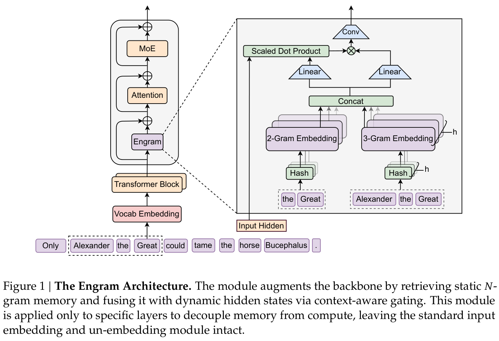
如图 1 所示，Engram 是一种条件记忆模块，旨在通过从结构上将静态模式存储与动态计算分离，增强 Transformer 骨干网络。形式上，给定输入序列 \(X = (x_{1}, \ldots , x_{T})\) 与第 \(\ell\) 层的隐藏状态 \(H^{(\ell )} \in \mathbb{R} ^{T\times d}\)，该模块通过两个功能阶段处理每个位置 \(t\)：检索和融合。首先，如第 2.2 节所详述，我们提取并压缩后缀 N-gram，通过哈希确定性地检索静态 embedding 向量。随后，在第 2.3 节中，当前隐藏状态对这些检索到的 embeddings 进行动态调制，并通过轻量卷积加以细化。最后，我们在第 2.4 节讨论与多分支架构的集成，在第 2.5 节讨论系统层面的设计。
第一阶段将局部上下文映射到静态记忆条目，包括 tokenizer 压缩，以及通过确定性哈希检索 embeddings。
Tokenizer 压缩。N-gram 模型通常直接使用 tokenizer 的输出，而标准子词 tokenizer 优先保证无损重构，往往给语义等价的词项分配彼此不同的 ID（例如 Apple 与 ␣apple）（Kudo and Richardson, 2018；Li et al., 2023b）。为了最大化语义密度，我们实现了一个词表投影层。具体而言，我们预先计算一个满射函数 \(P\)：\(V\) → \(V\)′，依据归一化后的文本等价性（采用 NFKC（Whistler, 2025）、转为小写等操作），将原始 token ID 合并为规范标识符。在实践中，这一过程使 128k tokenizer 的有效词表大小减少了 23%（见附录 C）。形式上，对于位置 \(t\) 的 token，我们将其原始 ID \(x_{t}\) 映射为规范 ID \({x'}_{t} = P(x_{t})\)，从而构成后缀 N-gram \(g_{t,n} = ({x'}_{t-n+1}, \ldots , {x'}_{t})\)。
多头哈希。直接对所有可能的 N-gram 组合空间进行参数化是不可行的。遵循 Tito Svenstrup et al.（2017），我们采用基于哈希的方法。为了减少冲突，对每个 N-gram 阶数 \(n\)，我们使用 \(K\) 个不同的哈希头。每个头 \(k\) 通过确定性函数 \(\phi _{n,k}\)，将压缩后的上下文映射为 embedding 表 \(E_{n,k}\)（其大小 \(M_{n,k}\) 为质数）中的索引：
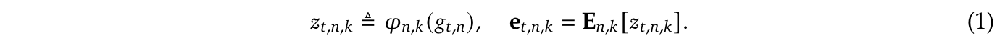
在实践中，\(\phi _{n,k}\) 实现为轻量的乘法-XOR 哈希。我们通过拼接所有检索到的 embeddings，构造最终的记忆向量 \(e_{t} \in \mathbb{R} ^{d_{mem}}\)：
检索到的 embeddings \(e_{t}\) 充当与上下文无关的先验。然而，由于它们是静态的，天然缺乏上下文适应能力，而且可能因哈希冲突或一词多义而受到噪声影响（Haber and Poesio, 2024）。为了增强表达能力并消除这种歧义，我们采用一种受 attention 启发的上下文感知门控机制（Bahdanau et al., 2015；Vaswani et al., 2017）。具体而言，我们将当前隐藏状态 \(h_{t}\)——它已经通过此前的 attention 层聚合了全局上下文——用作动态 Query，而检索到的记忆 \(e_{t}\) 则同时作为 Key 和 Value 投影的来源：
其中 \(W_{K}\)、\(W_{V}\) 是可学习的投影矩阵。为保证 gradient 稳定性（Dehghani et al., 2023），我们在计算标量门 \(\alpha _{t} \in (0, 1)\) 之前，对 Query 和 Key 应用 RMSNorm（Zhang and Sennrich, 2019）：
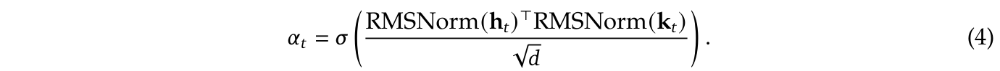
门控输出定义为 \(\tilde{v}_{t} = \alpha _{t} \cdot v_{t}\)。这种设计强制实现语义对齐：如果检索到的记忆 \(e_{t}\) 与当前上下文 \(h_{t}\) 相矛盾，门 \(\alpha _{t}\) 就趋近于零，从而有效抑制噪声。
最后，为扩大感受野并增强模型的非线性，我们引入一个短的逐通道因果卷积（Gu et al., 2022；Peng et al., 2023）。令 \(\tilde{V} \in \mathbb{R} ^{T\times d}\) 表示门控后的 value 序列。采用大小为 \(w\)（设为 4）的卷积核、膨胀率 \(\delta\)（设为最大 N-gram 阶数）及 SiLU 激活（Elfwing et al., 2018），最终输出 \(Y\) 计算如下：
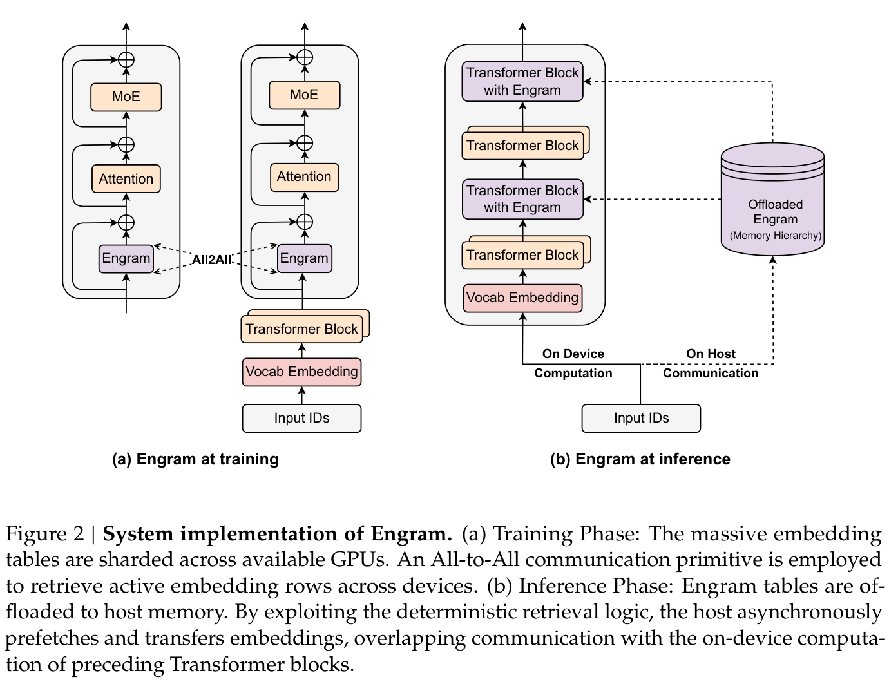
Engram 模块通过残差连接集成到骨干网络中：\(H^{(\ell )} \leftarrow H^{(\ell )} + Y\)，之后接标准 attention 和 MoE。关键在于，Engram 并不应用于每一层；其具体放置位置经过优化，以平衡建模效果和第 2.5 节详述的系统层面延迟约束。
在本工作中，我们将先进的多分支架构用作默认骨干网络，取代标准单流连接（He et al., 2016），选择它是因为其建模能力更优（Larsson et al., 2017；Szegedy et al., 2015；Xie et al., 2025；Zhu et al., 2025）。这一架构的决定性特征是，将 residual stream 扩展为 \(M\) 个并行分支，其中信息流由可学习的连接权重调制。
尽管 Engram 模块本身与拓扑无关，将它适配到这一多分支框架仍需要结构优化，以平衡效率与表达能力。具体而言，我们实现了一种参数共享策略：所有 \(M\) 个分支共享一个稀疏 embedding 表与一个 Value 投影矩阵 \(W_{V}\)，同时采用 \(M\) 个不同的 Key 投影矩阵 \(\{W_{K}^{(m)}\}_{m=1}^{M}\)，以支持各分支特有的门控行为。对于隐藏状态为 \(h_{t}^{(m)}\) 的第 \(m\) 个分支，其分支特有的门控信号计算如下：
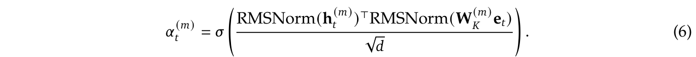
随后，这些独立的门作用于共享的 value 向量，从而调制检索到的记忆：\(u_{t}^{(m)} = \alpha _{t}^{(m)} \cdot (W_{V}e_{t})\)。这一设计允许将各线性投影（一个 \(W_{V}\) 和 \(M\) 个不同的 \(W_{K}^{(m)}\)）融合为一次稠密 FP8 矩阵乘法，最大化现代 GPU 的计算利用率。除非另有说明，所有实验均采用与 Manifold-Constrained Hyper-Connections（\(M\) = 4）（Xie et al., 2025）的这种集成方式。
扩展模型参数往往受限于 GPU 高带宽内存（HBM）的有限容量。然而，与依赖运行时隐藏状态进行动态路由的 MoE 不同，Engram 采用仅基于输入 token ID 的确定性检索机制，自然地将参数存储与计算解耦。如图 2 所示，这种可预测性使训练与推理都能够采用专门的优化策略。
训练时，为容纳大规模 embedding 表，我们采用标准的模型并行，将表分片到可用 GPU 上。前向传播利用 All-to-All 通信基本操作收集被激活的行，反向传播则用它分发 gradients，从而让总内存容量随加速器数量线性增长。
推理时，这种确定性使预取与重叠策略成为可能。由于在前向传播之前就已知道记忆索引，系统可以通过 PCIe 从充裕的主机内存异步检索 embeddings。为有效隐藏通信延迟，Engram 模块被放在骨干网络的特定层，利用前面各层的计算作为缓冲，避免 GPU 停顿。这需要硬件与算法协同设计：把 Engram 放得更深，可以延长用于隐藏延迟的计算窗口；但第 6.2 节的消融表明，建模性能更倾向于早期介入，以卸载局部模式重构。因此，最优放置位置必须同时满足建模与系统延迟约束。
此外，自然语言 N-gram 天然遵循 Zipf 分布（Chao and Zipf, 1950；Piantadosi, 2014），其中一小部分模式占据绝大多数记忆访问。这一统计性质启发了多级缓存层次结构：频繁访问的 embeddings 可缓存在更快的存储层级中（例如 GPU HBM 或主机 DRAM），而罕见模式的长尾则存放在速度较慢、容量较大的介质中（例如 NVMe SSD）。这种分层使 Engram 能扩展至巨大的记忆容量，同时对有效延迟的影响很小。
作为条件记忆的一种实现，Engram 与 MoE 专家提供的条件计算在结构上互补。本节研究这种二重性的扩展性质，以及如何最优地分配稀疏容量。具体而言，我们的研究由两个关键问题推动：
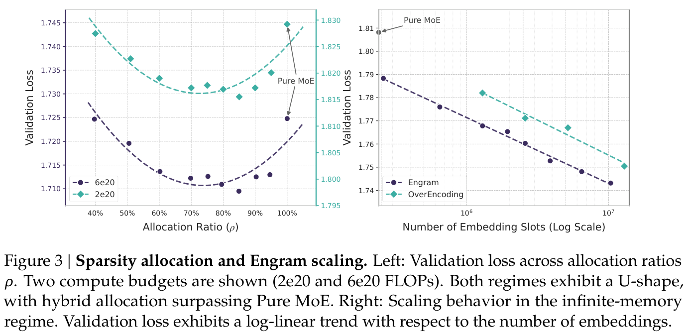
计算量匹配的形式化定义。我们使用三个参数指标分析这一权衡：
在每种 FLOPs 预算内，我们保持 \(P_{tot}\) 与 \(P_{act}\) 固定，使模型具有相同的参数量与每 token FLOPs。对于 MoE，\(P_{act}\) 由 Top-k 选中的专家决定，而未选中专家的参数计入 \(P_{sparse}\)。对于 Engram，每个 token 仅检索常数个槽位，因此增加 embedding 槽位数量会增加 \(P_{tot}\)，却不会增加每 token FLOPs。
分配比例。我们将分配比例 \(\rho \in [0, 1]\) 定义为未激活参数预算中分配给 MoE 专家容量的比例：
直观而言：
实验方案。我们在两种计算量设置下评估这一权衡，并在两种设置中保持稀疏比例 \(P_{tot} / P_{act} \approx 10\) 不变：
对于不同的 \(\rho\)，我们仅通过调整路由专家数量与 Engram embedding 槽位数量，构建相应模型。所有运行均采用相同的训练流程与优化超参数。
结果与分析。图 3（左）显示，验证损失与分配比例 \(\rho\) 之间存在一致的 U 形关系。值得注意的是，即使 MoE 的分配比例降至仅 \(\rho \approx 40\)%（即 5.7B 模型总共 46 个专家，9.9B 模型总共 43 个专家），Engram 模型仍能达到与纯 MoE 基线（\(\rho = 100\)%）相当的性能。此外，纯 MoE 基线被证明并非最优：将大约 20%–25% 的稀疏参数预算重新分配给 Engram，可以获得最佳性能。定量而言，在 10B 设置下（\(C\) = 6 × \(10^{20}\)），验证损失从 1.7248（\(\rho = 100\)% 时）改善至最优点 \(\rho \approx 80\)% 附近的 1.7109（\(\Delta = 0.0139\)）。关键在于，该最优点的位置在不同设置中保持稳定（\(\rho \approx 75\)%–80%），表明在所考察的尺度上（固定稀疏性时），存在稳健的分配偏好。所观察到的 U 形关系证实了这两个模块在结构上的互补性：
第 3.1 节中，我们在固定参数预算下优化了分配。现在，我们探索互补的设置：大幅扩展记忆。这项研究由第 2.5 节详述的 Engram 将存储与计算解耦的独特能力所推动。
实验方案。我们使用一个固定的 MoE 骨干网络，\(P_{tot} \approx\) 3B，\(P_{act} = 56\)8M，并训练 100B token 以保证收敛。在这一骨干网络上，我们附加一个 Engram 表，将槽位数量 \(M\) 从 2.58 × \(10^{5}\) 扫描到 1.0 × \(10^{7}\)（最多增加约 130 亿参数）。作为基线，我们与 OverEncoding（Huang et al., 2025a）比较；该方法通过与词表 embedding 求平均来整合 N-gram embeddings。我们注意到，虽然 SCONE（Yu et al., 2025）等其他工作也研究大规模 embeddings，但其主要面向推理，且包含额外模块（f-gram 模型）和额外训练 FLOPs，因此不符合本研究严格的等计算量约束。
结果。图 3（右）表明，增加记忆槽位数量能清晰且一致地改善验证损失。在所探索的范围内，曲线遵循严格的幂律（在对数空间中呈线性），意味着 Engram 提供了一个可预测的扩展手段：更大的记忆持续带来收益，而不需要额外计算。关键在于扩展效率：虽然 OverEncoding 的直接平均方法也受益于更大的记忆表，但在相同记忆预算下，Engram 释放了大得多的扩展潜力。结合第 3.1 节的分配规律，这些结果证实，条件记忆是一种独立、可扩展的稀疏容量维度，与 MoE 的条件计算形成互补。
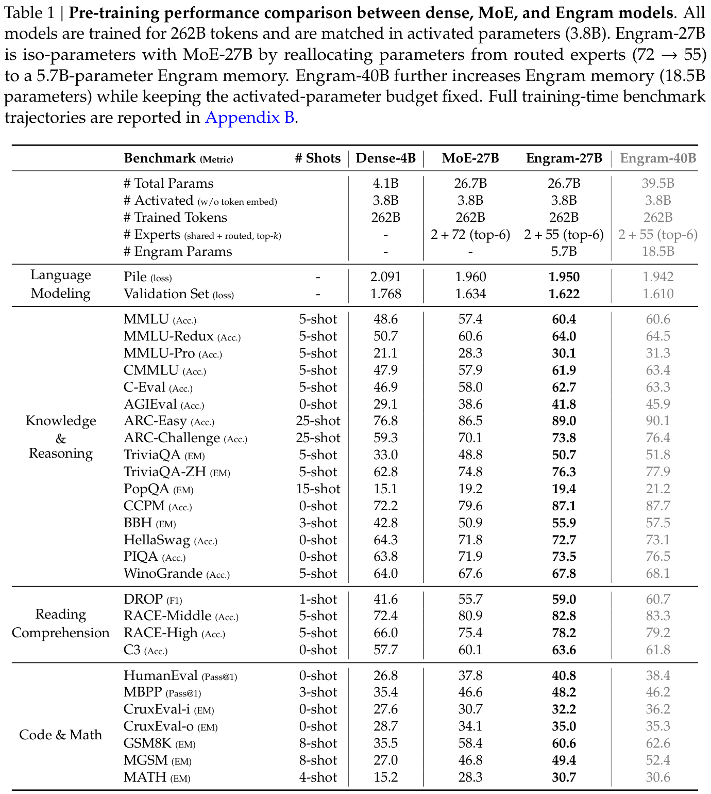
基于所提出的 Engram 架构和通过实证得到的分配规律，我们将 Engram 扩展到数十亿参数，以验证其在真实语言模型预训练中的有效性。具体而言，我们训练了四个模型：（1）Dense-4B（总参数 4.1B），（2）MoE-27B（总参数 26.7B），（3）Engram-27B（总参数 26.7B），以及（4）Engram-40B（总参数 39.5B）。所有模型均采用相同的数据课程（相同的 token 预算与顺序）训练，并严格匹配激活参数量。
训练数据与模型配置。所有模型均在一个 2620 亿 token 的语料库上预训练，采用 DeepSeek-V3（Liu et al., 2024a）的 tokenizer，词表大小为 128k。为保证受控比较，除非明确另有说明，我们对所有模型采用一致的默认建模设置。我们使用一个含 30 个块的 Transformer，隐藏维度为 2560。每个块集成一个具有 32 个头的 Multi-head Latent Attention（MLA）（DeepSeek-AI, 2024），通过扩展率为 4 的 mHC（Xie et al., 2025）与 FFN 连接。所有模型均使用 Muon（Jordan et al., 2024；Liu et al., 2025b）优化；详细超参数列于附录 A。我们构建四个不同模型：
评估方案。我们在涵盖语言建模、知识、推理、阅读理解以及代码／数学的多样化基准集合上评估模型。对于每个基准，我们遵循标准的提示方案和评估指标。
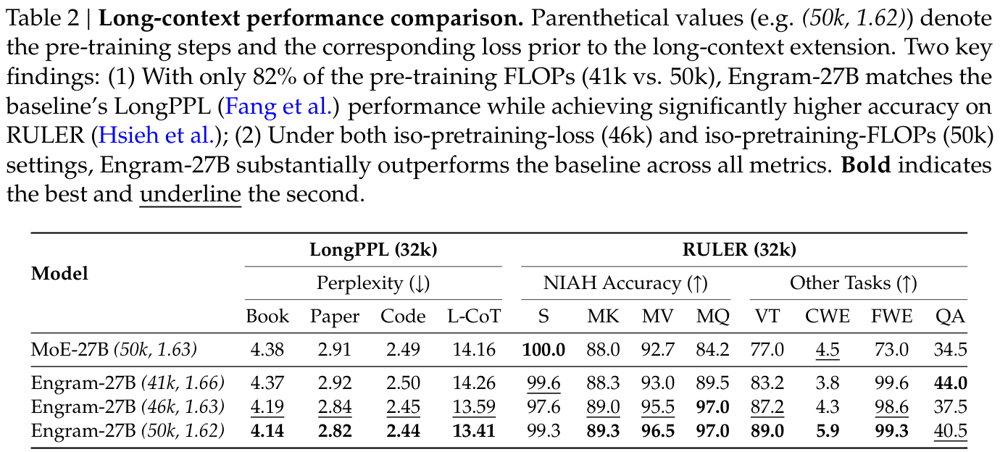
表 1 总结了主要结果。首先，与既有文献一致（Borgeaud et al., 2022；He, 2024；Shazeer et al., 2017），稀疏架构展现出优于稠密模型的 scaling laws。在相同训练计算预算下，三个稀疏变体（MoE-27B、Engram-27B/40B）在所有基准上均显著优于等 FLOPs 的 Dense-4B 基线。
更重要的是，Engram-27B 始终优于等参数、等 FLOPs 的 MoE-27B 基线。有趣的是，这些收益并不限于直觉上受益于记忆容量的知识密集型任务（例如 MMLU：+3.0；MMLU-Pro：+1.8；CMMLU：+4.0）。我们在通用推理领域（例如 BBH：+5.0；ARC-Challenge：+3.7；DROP：+3.3），以及代码和数学推理方面（例如 HumanEval：+3.0；MBPP：+1.6；GSM8K：+2.2；MATH：+2.4），观察到了更显著的提升。为降低基准噪声的影响并可视化训练动态，我们在附录 B 提供了预训练期间完整的基准轨迹。这些结果支持我们的假设：引入专门的知识查找基本操作，能够提高表示效率，超越将全部稀疏预算都分配给条件计算所能达到的水平。
最后，扩展至 Engram-40B 进一步降低了预训练损失，并改善了多数基准的性能。尽管它尚未在每项任务上严格优于 Engram-27B，但这很可能是训练不足所造成的现象。我们观察到，在训练临近结束时，Engram-40B 与各基线之间的训练损失差距仍继续扩大，表明在当前 token 预算内，扩展后的记忆容量尚未完全饱和。
通过将局部依赖建模卸载至静态查找，Engram 架构保留了宝贵的 attention 容量，用于管理全局上下文。本节通过开展长上下文扩展训练（Gao et al., 2025；Peng et al., 2024），以实证方式验证这种结构优势。通过严格的评估方案，将架构贡献与基础模型能力分离，我们证明 Engram 在长距离检索和推理任务上带来了显著提升。
训练细节。为获得长上下文能力，我们采用 DeepSeek-V3（Liu et al., 2024a）引入的上下文扩展策略。在预训练阶段之后，我们应用 YaRN（Peng et al., 2024）扩展上下文窗口，进行上下文长度为 32768 token 的训练，持续 5,000 步（300 亿 token 的高质量长上下文数据）。超参数为尺度 \(s\) = 10、\(\alpha = 1\)、\(\beta = 32\)，缩放因子 \(f\) = 0.707。
模型配置。我们比较四种不同模型配置的上下文扩展。对于 MoE-27B 和 Engram-27B，我们都使用最终预训练 checkpoint（50k 步）。此外，为严格衡量架构效率，我们选择 Engram-27B 在 41k 和 46k 步的两个中间 checkpoint。尽管初始化阶段不同，所有变体都遵循完全相同的上下文扩展训练方案。关键在于，之所以选择 Engram-27B（46k），是因为它的预训练损失与完全训练好的 MoE-27B（50k）相同。这形成了一个受控的“等损失”设置，保证上下文扩展过程中出现的任何性能差异，都归因于架构，而非模型的起始质量。
评估基准。我们使用 LongPPL（Fang et al.）与 RULER（Hsieh et al.）评估长上下文性能。对于 LongPPL，我们构造了涵盖四个类别的评估集：长篇书籍、研究论文、代码仓库和长 chain-of-thought（CoT）轨迹。对于 RULER，我们评估了 14 个子集，并归为 8 个类别：Single（S）、Multi-keys（MK）、Multi-values（MV）和 Multi-queries（MQ）Needle-in-a-Haystack；多跳 Variable Tracking（VT）、Common Words Extraction（CWE）、Frequent Words Extraction（FWE）以及 Question Answering（QA）。
评估结果汇总于表 2。为准确评估 Engram 架构的贡献，我们的分析分两步进行：首先将基础模型能力的影响与架构设计解耦，然后开展受控分析。
1. 超越 attention 机制的长上下文能力。虽然 attention 机制与位置编码为上下文处理提供了结构基础（Press et al., 2022；Su et al., 2024；Xiao et al., 2024；Yang et al., 2025），我们的结果表明，长上下文性能并非仅由架构先验决定。观察 Engram 的轨迹（41k → 50k）时，我们发现即使控制模型架构相同，且上下文扩展阶段计算预算固定，长上下文性能仍随预训练推进而单调提升。这表明，长上下文性能与基础模型的一般建模能力内在耦合。因此，严格的架构比较必须通过对齐基础模型损失来控制这一混杂变量，而不能仅对齐训练步数。
2. 受控设置下的架构优势。遵循上述原则，我们将 Engram 与 MoE 基线比较。在控制基础能力后，Engram 模块的效率收益变得明显：
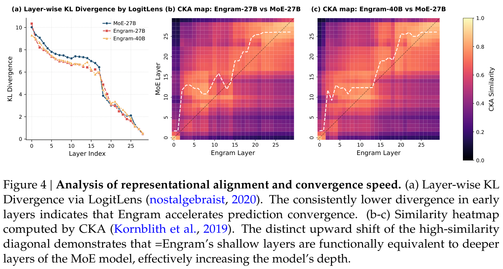
（续第 12 页等损失设置。）例如 Multi-Query NIAH：97.0 对 84.2；VT：87.2 对 77.0。
本节研究 Engram 的内部机制，包括其有效深度（第 6.1 节）、核心模块设计（第 6.2 节）和参数敏感性（第 6.3 节）。此外，我们评估卸载情况下的推理吞吐量（第 6.4 节），并以一个案例研究结束（第 6.5 节）。
目前的 LLM 缺乏专门的知识查找基本操作，依赖计算模拟记忆回忆。如表 3 所示，要识别实体“Diana, Princess of Wales”，LLM 必须消耗多层 attention 和 FFN，逐步组合特征（Ghandeharioun et al., 2024；Jin et al., 2025；Li and Subramani, 2025）；理论上，这一过程可以通过知识查找操作完成识别。
据此，我们提出，通过赋予模型显式的知识查找能力，Engram 使模型不再承担早期阶段的特征组合，从而有效模拟了模型深度的增加。为验证这一假设，我们采用两种机制可解释性工具：LogitLens（Belrose et al., 2023；nostalgebraist, 2020）与中心化核对齐分析（CKA）（Davari et al., 2023；Kornblith et al., 2019）。
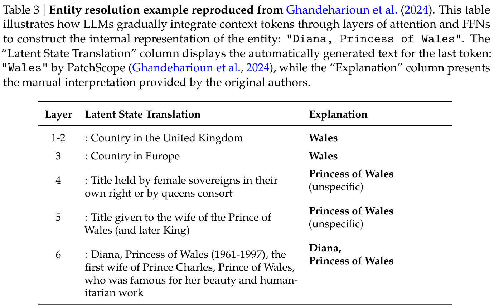
我们首先使用 LogitLens（nostalgebraist, 2020）分析预测在各层之间的演化。通过使用最终的 LM Head 投影每个中间层的隐藏状态，我们计算中间输出分布与模型最终输出分布之间的 Kullback–Leibler 散度（Kullback and Leibler, 1951）。这一指标量化了潜在表示距离“可用于预测”的状态有多近（Belrose et al., 2023；Csordás et al., 2025）。
图 4（a）报告了逐层 KL 散度。相比 MoE 基线，两种 Engram 变体都呈现出系统性更小的 KL 散度，且最明显的差距出现在早期块中。Engram 曲线下降得更陡，意味着模型能更快地完成特征组合。这一观察与我们的假设一致：通过显式访问外部知识，Engram 减少了所需的计算步骤，从而在网络层次结构中更早达到高置信度的有效预测。
为进一步研究 Engram 层在语义上是否对应基线的更深层，我们使用中心化核对齐（CKA）；它是比较表示结构的广泛使用的指标（Kornblith et al., 2019；Kriegeskorte et al., 2008）。给定两组表示 \(X\) 和 \(Y\)（例如来自不同模型或不同层的激活），CKA 定义为：
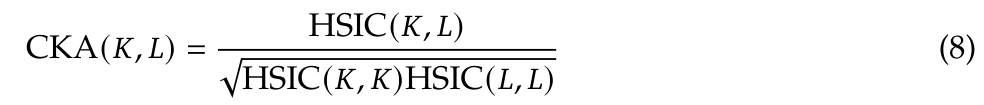
其中 \(K = XX^{⊤}\) 和 \(L = YY^{⊤}\) 表示 Gram 矩阵（采用线性核），HSIC 是 Hilbert-Schmidt 独立性准则（Gretton et al., 2005）。我们采用具有 HSIC 无偏估计量的 mini-batch 实现（Davari et al., 2023），在 Few-NERD 数据集（Ding et al., 2021）上评估，提取与命名实体最后一个 token 对应的隐藏状态。（接第 15 页。）
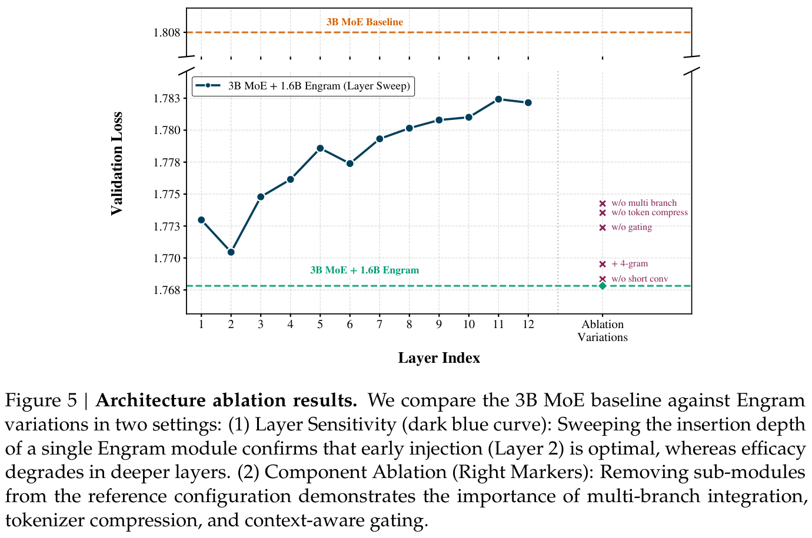
（续第 14 页：所提取的隐藏状态对应命名实体的最后一个 token。）
为严格量化逐层对应关系，我们首先计算两两 CKA 相似度矩阵 \(S \in [0, 1]^{L\times L}\)，其中 \(L\) 为层数。随后，我们引入软对齐索引 \(a_{j}\)，定义为每个 Engram 层 \(j\) 所对应的 Top-k 最相似 MoE 层的加权质心：
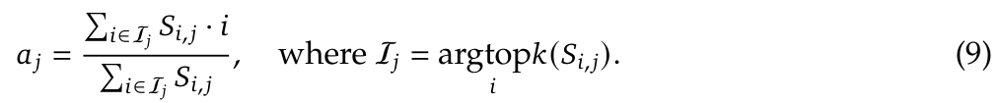
这里，\(S_{i,j}\) 表示 MoE 第 \(i\) 层与 Engram 第 \(j\) 层之间的相似度分数。索引 \(a_{j}\) 是 Engram 第 \(j\) 层对应的“有效 MoE 深度”的稳健代理，使用 Top-k 过滤（\(k\) = 5）降低低相似度噪声。
图 4（b）–（c）可视化了相似度热图，并叠加软对齐曲线（白色虚线）。我们观察到相对对角线明显向上偏移，意味着对于相当广泛的层，\(a_{j} > j\)。例如，Engram-27B 第 5 层形成的表示，与 MoE 基线约第 12 层的表示最为接近。
这一一致的偏离对角线现象，与 LogitLens 的结果（第 6.1.1 节）一致，证实 Engram 能在更早的层获得更深的表示。这验证了我们的核心假设：通过显式查找绕过早期特征组合，Engram 在功能上等价于增加模型的有效深度。
本节在受控设置下对 Engram 进行消融，以研究各项关键模块设计的有效性。除非另有说明，骨干网络为一个 12 层的 3B MoE 模型（激活参数 0.56B），训练 100B token。图 5 报告了验证损失。
橙色虚线表示 3B MoE 基线（验证损失 = 1.808）。
参考配置。我们用一个固定的 1.6B 参数 Engram 记忆增强骨干网络。参考模型使用 {2, 3}-gram，并在第 2 和第 6 层插入 Engram，得到验证损失 = 1.768，相比 MoE 基线显著改善（\(\Delta = 0.04\)）。以下所有结构消融均相对于这一参考配置定义。
记忆应注入何处？为了研究深度敏感性，我们保持 Engram 预算固定（1.6B），但将其合并为一个 Engram 模块，将插入层从第 1 层扫描至第 12 层（图 5 中深蓝色的“Layer Sweep”曲线）。这一实验揭示了 Engram 放置位置固有的权衡。
放置位置的权衡。较早注入 Engram，使它能在骨干网络消耗计算深度之前卸载局部模式重构，与骨干网络自然的层次化处理相适应（Ghandeharioun et al., 2024；Jin et al., 2025；Li and Subramani, 2025；Tenney et al., 2019）。然而，这会以门控精度为代价：早期隐藏状态尚未通过 attention 聚合足够的全局上下文，并行分支也缺少细粒度调制所需要的表示差异（Xie et al., 2025；Zhu et al., 2025）。因此，最优放置位置需要平衡：（i）较早卸载静态局部模式；（ii）在更晚时利用更强的上下文 Query 进行门控。
扫描表明，第 2 层取得了最佳的单层性能（验证损失 = 1.770），优于第 1 层，且随着插入点加深而退化。这意味着，一轮 attention 已足以提供具有实质上下文信息的 \(h_{t}\) 用于门控，同时又足够早，能够替代骨干网络底层的局部聚合。
虽然第 2 层在仅注入一次的约束下最优，我们发现把相同的 1.6B 记忆拆为两个较小模块（通过减小 embedding 维度 \(d_{mem}\) 实现），并分别放在第 2 和第 6 层，表现更好（验证损失 = 1.768）。这种分层设计将早期介入与丰富的后期上下文门控结合起来，协调了这一权衡。更重要的是，分层插入还具有实际的系统优势，能够更好地利用第 2.5 节所讨论的记忆层次结构。
哪些组件重要？从参考配置出发，我们在保持 Engram 参数预算固定的同时，逐一消融各项设计选择。结果由图 5 中的标记表示。我们发现，三个组件带来了最显著的收益：（\(i\)）多分支骨干网络内各分支特有的融合；（ii）上下文感知门控；（iii）tokenizer 压缩。移除其中任何一项，都会造成最大的验证损失退化。具体而言，对于“w/o multi branch”消融，我们保留 mHC 骨干网络结构，但把各分支特有的门控替换为一次 Engram 融合，应用于预映射 \(H^{pre}\) 之后的隐藏状态（Xie et al., 2025）。
其他改动的影响较小：移除轻量逐通道卷积仅使性能轻微下降。在固定 1.6B 预算下，为 4-gram 分配容量略逊于最优——很可能因为它分散了更常见的 2/3-gram 模式的容量——不过，我们并不排除在更大的记忆规模下，高阶 N-gram 会变得有益。
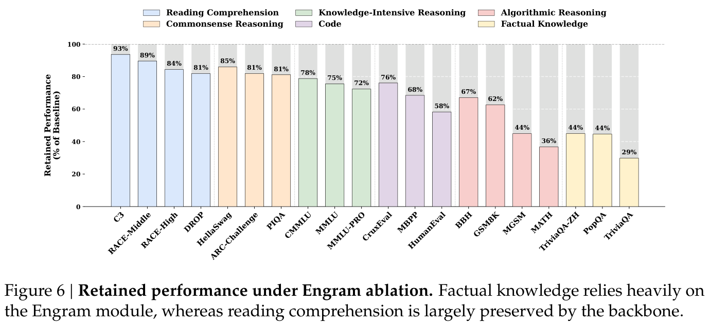
为刻画 Engram 模块的功能贡献，我们在推理时完全抑制稀疏 embedding 的输出，同时保持骨干网络不变，以此评估模型。关键在于，这种事后消融会造成训练与推理的不一致，可能给复杂的混合能力任务引入噪声。因此，我们优先分析事实知识与阅读理解——敏感性谱的两个极端——它们在这种压力测试下具有最高的信噪比。
如图 6 所示，结果揭示了鲜明的功能二分。事实知识基准发生灾难性崩塌，仅保留原始性能的 29–44%（例如 TriviaQA 为 29%），证实 Engram 模块是参数知识的主要存储库。相比之下，阅读理解任务非常稳健，保留了 81–93%（例如 C3 为 93%），表明基于上下文的任务主要依赖骨干网络的 attention 机制，而非 Engram。
Engram 相比基于路由的 MoE 的一个关键系统优势在于，其稀疏激活通过显式、静态的哈希 ID 寻址。这产生严格确定的记忆访问模式：一旦 token 序列已知，下一次 Engram 查找的索引就固定下来，并可在相应层执行之前计算。
实验设置。我们基于 nano-vLLM1——业界标准 vLLM 引擎（Kwon et al., 2023）的精简原型——实现了推理测试程序。为了获得不受 MoE 中 EP 通信模式干扰的纯净延迟基线，我们在两个稠密骨干网络（Dense-4B 与 Dense-8B）上进行基准测试。我们在第二个 Transformer 块中插入一个巨大的 100B 参数 Engram 层，整个 embedding 表驻留在主机 DRAM 中。推理时，系统异步预取 Engram 层所需的 embeddings，将 PCIe 传输与第一个块的计算重叠。
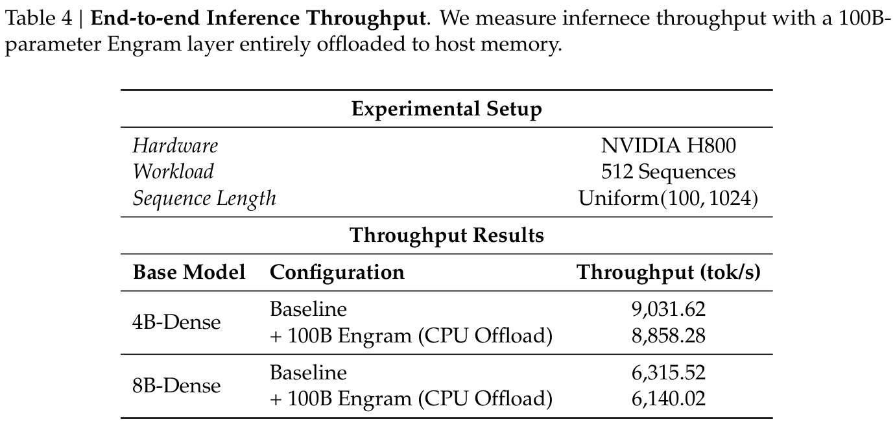
结果。如表 4 所详述，卸载一个 100B 参数的 embedding 表仅导致可忽略的吞吐量损失，在 8B 骨干网络上最大也只有 2.8%。这证实，早期稠密块的计算强度提供了足够的时间窗口来隐藏检索延迟。关键在于，每一步的有效通信量随激活槽位数量增长，而非随整个 embedding 表的大小增长。
关键在于，这一实验是一个保守基线。虽然第 2.5 节的分层设计利用 Zipf 局部性，将频繁访问条目缓存在 HBM 中，但我们的实验设置强制所有检索都从主机内存经过 PCIe 总线完成。这一基线检索策略的开销仍然很小，有力表明充分优化、考虑局部性的实现，其吞吐量损失可以忽略不计。
第 2.3 节引入了上下文感知门控机制，用于动态调制检索到的静态记忆与骨干网络的融合。为以实证验证 Engram 是否按预期工作，我们在图 7 中对不同样例上的 Engram-27B2 门控标量 \(\alpha _{t}\) 进行可视化。
结果显示出明显的选择性模式。门控机制在完成局部、静态模式时会一致地激活（以红色表示）。在英文中，我们观察到多 token 命名实体（例如“Alexander the Great”、“the Milky Way”）和程式化短语（例如“By the way”、“Princess of Wales”）上的强激活。这种行为能有效推广到不同语言。在中文示例中，Engram 识别并检索了明确的习语表达和历史实体，例如“四大发明”和“张仲景”。这些定性结果证实，Engram 成功识别并处理了定型的语言依赖，有效减轻了 Transformer 骨干网络记忆这些静态关联的负担。
2如架构设置中所详述，此模型使用 mHC（M = 4），并在第 2 和第 15 层插入 Engram 模块。因此，对任意给定 token，模型总共计算 8 个不同的门控标量。我们观察到，并非每个分支都编码了可解释的激活模式。为了使可视化清晰，我们选择并展示了与语义模式匹配相关性最强的门控值。
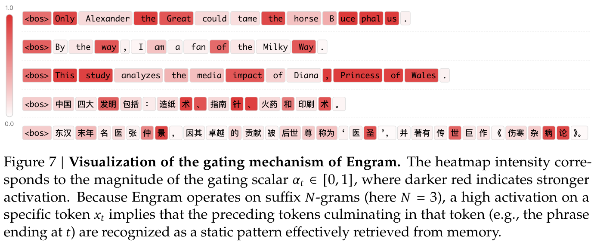
N-gram 建模与 embedding 扩展。N-gram 模型源于 Shannon 的框架（Shannon, 1948），依靠局部历史预测 token，传统上采用平滑技术（Katz, 1987；Kneser and Ney, 1995）来缓解数据稀疏性。尽管范式已转向用神经架构（Bengio et al., 2003）捕捉长距离依赖，N-gram 查找的计算效率仍在现代表示学习中得到保留，FastText（Bojanowski et al., 2017）等开创性工作便是例证。
近期，这一范式以 embedding 扩展的形式再次兴起。Per-Layer Embeddings（Team, 2025）、STEM（Sadhukhan et al., 2026）、L3（Tseng and Sa, 2026）和 DeepEmbed（RWKV Team, 2025）等架构通过巨型表扩展容量，而另一条独立的开创性研究路线——与我们方法最为相关——则把组合式 N-gram 结构直接融入表示空间。N-Grammer（Roy et al., 2022）使用从离散潜在文本表示构建的 N-gram，直接增强 Transformer 架构；Feng et al.（2023）则证明了 N-gram 在语音识别中的有效性。SuperBPE（Liu et al., 2025a）和 SCONE（Yu et al., 2025）明确针对高频模式：前者将多词表达合并为“superword” token，后者则通过一个辅助编码模型实现。与此同时，OverEncoding（Huang et al., 2025a）和 Byte Latent Transformer（BLT）（Pagnoni et al., 2025）采用哈希 N-gram embeddings，分别捕捉 token 级和字节级的局部依赖。这些研究共同证明，通过 N-gram 表示扩展参数，可以用极低的计算开销实现有效收益。虽然这些方法在各自的设置中取得了显著提升，我们的工作在两个关键维度上具有根本区别。
（续第 19 页。）这一串行化见 Huang et al.（2025a）与 Yu et al.（2025）。相比之下，Engram 有策略地将记忆注入更深层，以实现通信与计算重叠。此外，通过利用 N-gram 固有的 Zipf 分布，我们可以最大化硬件记忆层次结构的效用。这种整体设计使 Engram 能扩展至巨大的参数规模，同时推理开销可以忽略不计。
高基数类别 embeddings。在大规模推荐系统中，存在一个密切相关的表示问题：模型为数百种类别特征学习 embeddings，而它们的词表可能包含数百万至数十亿个 ID（Coleman et al., 2023）。既有工作通过多重哈希与组合式表示（Shi et al., 2020；Tito Svenstrup et al., 2017）、频率感知哈希与冲突管理（Tsang and Ahle, 2022；Zhang et al., 2020, 2024）、适应频率或重要性的容量分配（Ginart et al., 2021；Joglekar et al., 2020；Liu et al., 2021），以及基于量化、张量分解或共享内存布局的结构化压缩（Desai et al., 2022；Kang et al., 2020；Yin et al., 2021），改善参数与准确率之间及内存访问方面的权衡。其他方法在多个类别字段之间共享表示（Coleman et al., 2023）、在没有显式表的情况下生成 embeddings（Kang et al., 2021），或以学习得到的语义标识符替代任意的条目 ID（Rajput et al., 2023；Singh et al., 2024）。Engram 与这些文献共同面临在高度偏斜的访问分布下表示极大离散键空间的挑战，但区别在于，它由有序文本 N-gram 构建键，并通过上下文感知门控，将检索到的表示注入 Transformer 中间层。
MoE。MoE 架构通过为每个 token 条件性地激活稀疏的专家子集，将模型容量与计算成本解耦；这一范式由 Shazeer et al.（2017）引入。随后的 GShard（Lepikhin et al., 2020）、BASE（Lewis et al., 2021）、Switch Transformer（Fedus et al., 2022）与 GLaM（Du et al., 2022）等创新，使参数得以超线性扩展，同时维持恒定的推理成本。更近期，DeepSeekMoE（Dai et al., 2024）通过细粒度专家划分与共享专家隔离，展现出更优的效率，显著优于具有相同激活参数量的稠密模型。采用这一架构，DeepSeek-V3（Liu et al., 2024a）和 Kimi-k2（Kimi, 2025）等最先进模型，进一步将总参数推进到数千亿规模。
记忆网络。记忆增强网络的研究旨在扩展模型容量，而不按比例增加计算成本，大体可分为参数化与非参数化方法。参数化记忆方法，例如 PKM（Lample et al., 2019）、PEER（He, 2024）、Selfmem（Cheng et al., 2023b）、Memory+（Berges et al., 2025）以及 Ultra-Mem（Huang et al., 2025b,c），将大规模、稀疏的键值存储直接集成到模型层中，从而大幅增加容量，而对 FLOPs 的影响可以忽略不计。相比之下，REALM（Guu et al., 2020）、RETRO（Borgeaud et al., 2022；Wang et al., 2023）、CoG（Cao et al.；Lan et al., 2023）和 PlugLM（Cheng et al., 2023a）等非参数化记忆方法，将知识存储与模型处理解耦，把外部记忆视为可编辑、可扩展的键值存储，使模型能够适应不断变化的信息，而不需要昂贵的重新训练。
知识存储机制。与容量扩展研究并行，大量研究审视了 Transformer 编码与检索事实知识的内部机制。FFN 被普遍认为充当键值记忆（Geva et al., 2021）。在这一框架中，第一层充当模式检测器（“keys”），第二层将特定信息投影到 residual stream 中（“values”）。研究识别出了负责存储不同事实的特定“知识神经元”，为这种模块化提供了证据（Dai et al., 2022）。因果追踪方法进一步提供了验证，将事实回忆的信息流映射到特定 FFN 层（Meng et al., 2022）。这些发现催生了 ROME（Meng et al., 2022）和 MEMIT（Meng et al., 2023）等精确的模型编辑算法，允许直接更新事实关联，而无需重新训练。此外，对内部表示的研究，例如 Othello-GPT 中的研究（Li et al., 2023a），表明这些存储机制可能促进结构化“世界模型”的涌现，而非仅仅是统计性记忆。
本工作引入条件记忆，作为当前主流条件计算范式（MoE）的互补稀疏性维度，旨在解决通过动态计算模拟知识检索的低效性。我们通过 Engram 实现这一概念；该模块对经典 N-gram embeddings 进行现代化改造，以支持可扩展、常数时间 \(O\)(1) 的静态模式查找。
通过定义稀疏性分配问题，我们发现一种 U 形 scaling law，表明在 MoE 专家与 Engram 记忆之间混合分配稀疏容量，可以严格优于纯 MoE 基线。在这一规律指导下，我们将 Engram 扩展至 27B 参数，在不同领域取得了更优性能。值得注意的是，虽然直觉上记忆模块有助于知识检索，我们在通用推理、代码和数学上观察到更大的提升。
我们的机制分析表明，Engram 使早期层不再承担静态重构任务，从而有效“加深”网络，释放 attention 容量，使其专注于全局上下文与复杂推理。这种架构变化转化为长上下文能力的实质性改善，LongPPL 与 RULER 上的性能提升为此提供了证据。最后，Engram 主张将考虑基础设施的效率作为一等设计原则。其确定性寻址允许将存储与计算解耦，使巨型参数表能卸载到主机内存，而推理开销可以忽略不计。我们认为，条件记忆将成为下一代稀疏模型不可或缺的建模基本操作。
J. Austin, A. Odena, M. Nye, M. Bosma, H. Michalewski, D. Dohan, E. Jiang, C. Cai, M. Terry, Q. Le, 等。使用 LLM 进行程序合成（Program synthesis with large language models）。arXiv 预印本 arXiv:2108.07732，2021。
D. Bahdanau, K. Cho, Y. Bengio。通过联合学习对齐与翻译实现神经机器翻译（Neural machine translation by jointly learning to align and translate）。载 Y. Bengio 与 Y. LeCun（编），第 3 届 International Conference on Learning Representations，ICLR 2015，San Diego, CA, USA，2015 年 5 月 7–9 日，会议主轨论文集，2015。URL：http://arxiv.org/abs/1409.0473。
使用 tuned lens 引出 Transformer 的潜在预测
N. Belrose, Z. Furman, L. Smith, D. Halawi, I. Ostrovsky, L. McKinney, S. Biderman, and J. Steinhardt. Eliciting latent predictions from transformers with the tuned lens. arXiv preprint arXiv:2303.08112, 2023.
神经概率语言模型
Y. Bengio, R. Ducharme, P. Vincent, and C. Janvin. A neural probabilistic language model. J. Mach. Learn. Res., 3:1137–1155, 2003. URL https://jmlr.org/papers/v3/bengio03a.html.
通过随机神经元估计或传播 gradients，以实现条件计算
Y. Bengio, N. Léonard, and A. Courville. Estimating or propagating gradients through stochastic neurons for conditional computation, 2013. URL https://arxiv.org/abs/1308.3432.
大规模记忆层
V. Berges, B. Oguz, D. Haziza, W. Yih, L. Zettlemoyer, and G. Ghosh. Memory layers at scale. In Forty-second International Conference on Machine Learning, ICML 2025, Vancouver, BC, Canada, July 13-19, 2025. OpenReview.net, 2025. URL https://openreview.net/forum?id=ATqGm1WyDj.
DeepSeek LLM：以长期主义扩展开源语言模型
X. Bi, D. Chen, G. Chen, S. Chen, D. Dai, C. Deng, H. Ding, K. Dong, Q. Du, Z. Fu, et al. Deepseek llm: Scaling open-source language models with longtermism. arXiv preprint arXiv:2401.02954, 2024.
PIQA：自然语言中的物理常识推理
Y. Bisk, R. Zellers, J. Gao, Y. Choi, et al. Piqa: Reasoning about physical commonsense in natural language. In Proceedings of the AAAI conference on artificial intelligence, volume 34, pages 7432–7439, 2020.
利用子词信息丰富词向量
P. Bojanowski, E. Grave, A. Joulin, and T. Mikolov. Enriching word vectors with subword information. Transactions of the association for computational linguistics, 5:135–146, 2017.
通过检索数万亿 token 改善语言模型
S. Borgeaud, A. Mensch, J. Hoffmann, T. Cai, E. Rutherford, K. Millican, G. B. Van Den Driessche, J.-B. Lespiau, B. Damoc, A. Clark, et al. Improving language models by retrieving from trillions of tokens. In International conference on machine learning, pages 2206–2240. PMLR, 2022.
机器翻译中的 LLM
T. Brants, A. C. Popat, P. Xu, F. J. Och, and J. Dean. Large language models in machine translation. In J. Eisner, editor, Proceedings of the 2007 Joint Conference on Empirical Methods in Natural Language Processing and Computational Natural Language Learning (EMNLP-CoNLL), pages 858–867, Prague, Czech Republic, June 2007. Association for Computational Linguistics. URL https://aclanthology.org/D07-1090/.
检索即准确生成
B. Cao, D. Cai, L. Cui, X. Cheng, W. Bi, Y. Zou, and S. Shi. Retrieval is accurate generation. In The Twelfth International Conference on Learning Representations.
人类行为与最小努力原则：人类生态学导论
Y. R. Chao and G. K. Zipf. Human behavior and the principle of least effort: An introduction to human ecology. Language, 26:394, 1950. URL https://api.semanticscholar.org/CorpusID:10182796.
评估在代码上训练的 LLM
M. Chen, J. Tworek, H. Jun, Q. Yuan, H. P. de Oliveira Pinto, J. Kaplan, H. Edwards, Y. Burda, N. Joseph, G. Brockman, A. Ray, R. Puri, G. Krueger, M. Petrov, H. Khlaaf, G. Sastry, P. Mishkin, B. Chan, S. Gray, N. Ryder, M. Pavlov, A. Power, L. Kaiser, M. Bavarian, C. Winter, P. Tillet, F. P. Such, D. Cummings, M. Plappert, F. Chantzis, E. Barnes, A. Herbert-Voss, W. H. Guss, A. Nichol, A. Paino, N. Tezak, J. Tang, I. Babuschkin, S. Balaji, S. Jain, W. Saunders, C. Hesse, A. N. Carr, J. Leike, J. Achiam, V. Misra, E. Morikawa, A. Radford, M. Knight, M. Brundage, M. Murati, K. Mayer, P. Welinder, B. McGrew, D. Amodei, S. McCandlish, I. Sutskever, and W. Zaremba. Evaluating large language models trained on code, 2021. URL https://arxiv.org/abs/2107.03374.
将知识与参数解耦，实现即插即用语言建模
X. Cheng, Y. Lin, X. Chen, D. Zhao, and R. Yan. Decouple knowledge from paramters for plug-and-play language modeling. In A. Rogers, J. Boyd-Graber, and N. Okazaki, editors, Findings of the Association for Computational Linguistics: ACL 2023, pages 14288–14308, Toronto, Canada, July 2023a. Association for Computational Linguistics. doi: 10.18653/v1/20 23.findings-acl.901. URL https://aclanthology.org/2023.findings-acl.901/.
自我提升：利用自记忆进行检索增强文本生成
X. Cheng, D. Luo, X. Chen, L. Liu, D. Zhao, and R. Yan. Lift yourself up: Retrieval-augmented text generation with self-memory. Advances in Neural Information Processing Systems, 36: 43780–43799, 2023b.
以为已经解决问答？试试 ARC，AI2 推理挑战
P. Clark, I. Cowhey, O. Etzioni, T. Khot, A. Sabharwal, C. Schoenick, and O. Tafjord. Think you have solved question answering? try arc, the ai2 reasoning challenge. arXiv preprint arXiv:1803.05457, 2018.
训练验证器以解决数学应用题
K. Cobbe, V. Kosaraju, M. Bavarian, M. Chen, H. Jun, L. Kaiser, M. Plappert, J. Tworek, J. Hilton, R. Nakano, et al. Training verifiers to solve math word problems. arXiv preprint arXiv:2110.14168, 2021.
统一 embedding：用于 Web 规模机器学习系统、经实战检验的特征表示
B. Coleman, W.-C. Kang, M. Fahrbach, R. Wang, L. Hong, E. Chi, and D. Cheng. Unified embedding: Battle-tested feature representations for web-scale ml systems. Advances in Neural Information Processing Systems, 36:56234–56255, 2023.
Gemini 2.5：以先进推理、多模态、长上下文和下一代 agent 能力推进前沿
G. Comanici, E. Bieber, M. Schaekermann, I. Pasupat, N. Sachdeva, I. Dhillon, M. Blistein, O. Ram, D. Zhang, E. Rosen, et al. Gemini 2.5: Pushing the frontier with advanced reasoning, multimodality, long context, and next generation agentic capabilities. arXiv preprint arXiv:2507.06261, 2025.
综述：多词表达处理综述
M. Constant, G. Eryi˘git, J. Monti, L. Van Der Plas, C. Ramisch, M. Rosner, and A. Todirascu. Survey: multiword expression processing: a survey. Computational Linguistics, 43(4):837–892, 2017.
语言模型能否高效利用其深度？
R. Csordás, C. D. Manning, and C. Potts. Do language models use their depth efficiently? arXiv preprint arXiv:2505.13898, 2025.
预训练 Transformer 中的知识神经元
D. Dai, L. Dong, Y. Hao, Z. Sui, B. Chang, and F. Wei. Knowledge neurons in pretrained transformers. In Proceedings of the 60th Annual Meeting of the Association for Computational Linguistics (Volume 1: Long Papers), pages 8493–8502, 2022.
DeepSeekMoE：迈向 MoE 语言模型中的极致专家专门化
D. Dai, C. Deng, C. Zhao, R. Xu, H. Gao, D. Chen, J. Li, W. Zeng, X. Yu, Y. Wu, et al. Deepseekmoe: Towards ultimate expert specialization in mixture-of-experts language models. arXiv preprint arXiv:2401.06066, 2024.
CKA 作为深度学习相似性度量的可靠性
M. Davari, S. Horoi, A. Natik, G. Lajoie, G. Wolf, and E. Belilovsky. Reliability of CKA as a similarity measure in deep learning. In The Eleventh International Conference on Learning Representations, ICLR 2023, Kigali, Rwanda, May 1-5, 2023. OpenReview.net, 2023. URL https://openreview.net/forum?id=8HRvyxc606.
DeepSeek-V2：强大、经济且高效的 MoE 语言模型
DeepSeek-AI. Deepseek-v2: A strong, economical, and efficient mixture-of-experts language model, 2024. URL https://arxiv.org/abs/2405.04434.
M. Dehghani, J. Djolonga, B. Mustafa, P. Padlewski, J. Heek, J. Gilmer, A. P. Steiner, M. Caron, R. Geirhos, I. Alabdulmohsin, R. Jenatton, L. Beyer, M. Tschannen, A. Arnab, X. Wang, C. Riquelme Ruiz, M. Minderer, J. Puigcerver, U. Evci, M. Kumar, S. V. Steenkiste, G. F. Elsayed, A. Mahendran, F. Yu, A. Oliver, F. Huot, J. Bastings, M. Collier, A. A. Gritsenko,（作者名单接第 24 页。）
以下第一条续第 23 页的 Dehghani et al. 作者名单。
将视觉 Transformer 扩展至 220 亿参数
V. Birodkar, C. N. Vasconcelos, Y. Tay, T. Mensink, A. Kolesnikov, F. Pavetic, D. Tran, T. Kipf, M. Lucic, X. Zhai, D. Keysers, J. J. Harmsen, and N. Houlsby. Scaling vision transformers to 22 billion parameters. In A. Krause, E. Brunskill, K. Cho, B. Engelhardt, S. Sabato, and J. Scarlett, editors, Proceedings of the 40th International Conference on Machine Learning, volume 202 of Proceedings of Machine Learning Research, pages 7480–7512. PMLR, 23–29 Jul 2023. URL https://proceedings.mlr.press/v202/dehghani23a.html.
用于 CriteoTB 基准 MLPerf DLRM 模型的随机偏移块 embedding 数组（ROBE）：1000 倍压缩与 3.1 倍推理加速
A. Desai, L. Chou, and A. Shrivastava. Random offset block embedding array (robe) for criteotb benchmark mlperf dlrm model : 1000× compression and 3.1× faster inference, 2022. URL https://arxiv.org/abs/2108.02191.
Few-NERD：少样本命名实体识别数据集
N. Ding, G. Xu, Y. Chen, X. Wang, X. Han, P. Xie, H. Zheng, and Z. Liu. Few-nerd: A few-shot named entity recognition dataset. In Proceedings of the 59th Annual Meeting of the Association for Computational Linguistics and the 11th International Joint Conference on Natural Language Processing (Volume 1: Long Papers), pages 3198–3213, 2021.
GLaM：利用 MoE 高效扩展语言模型
N. Du, Y. Huang, A. M. Dai, S. Tong, D. Lepikhin, Y. Xu, M. Krikun, Y. Zhou, A. W. Yu, O. Firat, et al. Glam: Efficient scaling of language models with mixture-of-experts. In International conference on machine learning, pages 5547–5569. PMLR, 2022.
DROP：需要对段落进行离散推理的阅读理解基准
D. Dua, Y. Wang, P. Dasigi, G. Stanovsky, S. Singh, and M. Gardner. DROP: A reading comprehension benchmark requiring discrete reasoning over paragraphs. In J. Burstein, C. Doran, and T. Solorio, editors, Proceedings of the 2019 Conference of the North American Chapter of the Association for Computational Linguistics: Human Language Technologies, NAACL-HLT 2019, Minneapolis, MN, USA, June 2-7, 2019, Volume 1 (Long and Short Papers), pages 2368– 2378. Association for Computational Linguistics, 2019. doi: 10.18653/v1/n19-1246. URL https://doi.org/10.18653/v1/n19-1246.
用于强化学习中神经网络函数逼近的 sigmoid 加权线性单元
S. Elfwing, E. Uchibe, and K. Doya. Sigmoid-weighted linear units for neural network function approximation in reinforcement learning. Neural networks, 107:3–11, 2018.
习语原则与自由选择原则
B. Erman. The idiom principle and the open choice principle. Text-Interdisciplinary Journal for the Study of Discourse, 2000.
长上下文语言建模的 PPL 有什么问题？
L. Fang, Y. Wang, Z. Liu, C. Zhang, S. Jegelka, J. Gao, B. Ding, and Y. Wang. What is wrong with perplexity for long-context language modeling? In The Thirteenth International Conference on Learning Representations.
Switch Transformers：以简单高效的稀疏性扩展至万亿参数模型
W. Fedus, B. Zoph, and N. Shazeer. Switch transformers: Scaling to trillion parameter models with simple and efficient sparsity. Journal of Machine Learning Research, 23(120):1–39, 2022.
用于自动语音识别的记忆增强查找词典语言建模
Y. Feng, M. Tu, R. Xia, C. Huang, and Y. Wang. Memory augmented lookup dictionary based language modeling for automatic speech recognition. In Proc. Interspeech 2023, pages 481– 485, 2023.
The Pile：用于语言建模的 800GB 多样化文本数据集
L. Gao, S. Biderman, S. Black, L. Golding, T. Hoppe, C. Foster, J. Phang, H. He, A. Thite, N. Nabeshima, et al. The pile: An 800gb dataset of diverse text for language modeling. arXiv preprint arXiv:2101.00027, 2020.
如何有效训练长上下文语言模型
T. Gao, A. Wettig, H. Yen, and D. Chen. How to train long-context language models (effectively). In Proceedings of the 63rd Annual Meeting of the Association for Computational Linguistics (Volume 1: Long Papers), pages 7376–7399, 2025.
我们已经完成 MMLU 了吗？
A. P. Gema, J. O. J. Leang, G. Hong, A. Devoto, A. C. M. Mancino, R. Saxena, X. He, Y. Zhao, X. Du, M. R. G. Madani, et al. Are we done with mmlu? In Proceedings of the 2025 Conference of the Nations of the Americas Chapter of the Association for Computational Linguistics: Human Language Technologies (Volume 1: Long Papers), pages 5069–5096, 2025.
Transformer 前馈层是键值记忆
M. Geva, R. Schuster, J. Berant, and O. Levy. Transformer feed-forward layers are key-value memories. In Proceedings of the 2021 Conference on Empirical Methods in Natural Language Processing, pages 5484–5495, 2021.
Patchscopes：检视语言模型隐藏表示的统一框架
A. Ghandeharioun, A. Caciularu, A. Pearce, L. Dixon, and M. Geva. Patchscopes: A unifying framework for inspecting hidden representations of language models. In International Conference on Machine Learning, pages 15466–15490. PMLR, 2024.
混合维度 embeddings 及其在内存高效推荐系统中的应用
A. A. Ginart, M. Naumov, D. Mudigere, J. Yang, and J. Zou. Mixed dimension embeddings with application to memory-efficient recommendation systems. In 2021 IEEE International symposium on information theory (ISIT), pages 2786–2791. IEEE, 2021.
使用 Hilbert-Schmidt 范数衡量统计依赖
A. Gretton, O. Bousquet, A. Smola, and B. Schölkopf. Measuring statistical dependence with hilbert-schmidt norms. In International conference on algorithmic learning theory, pages 63–77. Springer, 2005.
利用结构化状态空间高效建模长序列
A. Gu, K. Goel, and C. Ré. Efficiently modeling long sequences with structured state spaces. In The Tenth International Conference on Learning Representations, ICLR 2022, Virtual Event, April 25-29, 2022. OpenReview.net, 2022. URL https://openreview.net/forum?id=uYLFoz1vlAC.
CruxEval：代码推理、理解与执行基准
A. Gu, B. Rozière, H. J. Leather, A. Solar-Lezama, G. Synnaeve, and S. Wang. Cruxeval: A benchmark for code reasoning, understanding and execution. In Forty-first International Conference on Machine Learning, ICML 2024, Vienna, Austria, July 21-27, 2024. OpenReview.net, 2024. URL https://openreview.net/forum?id=Ffpg52swvg.
DeepSeek-R1：通过强化学习激励 LLM 的推理能力
D. Guo, D. Yang, H. Zhang, J. Song, R. Zhang, R. Xu, Q. Zhu, S. Ma, P. Wang, X. Bi, et al. Deepseek-r1: Incentivizing reasoning capability in llms via reinforcement learning. arXiv preprint arXiv:2501.12948, 2025.
检索增强语言模型预训练
K. Guu, K. Lee, Z. Tung, P. Pasupat, and M. Chang. Retrieval augmented language model pre-training. In International conference on machine learning, pages 3929–3938. PMLR, 2020.
一词多义：来自语言学、行为科学和上下文相关语言模型的证据
J. Haber and M. Poesio. Polysemy—Evidence from linguistics, behavioral science, and contextualized language models. Computational Linguistics, 50(1):351–417, Mar. 2024. doi: 10.1162/coli_a_00500. URL https://aclanthology.org/2024.cl-1.10/.
用于图像识别的深度残差学习
K. He, X. Zhang, S. Ren, and J. Sun. Deep residual learning for image recognition. In Proceedings of the IEEE conference on computer vision and pattern recognition, pages 770–778, 2016.
百万专家混合模型
X. O. He. Mixture of a million experts. arXiv preprint arXiv:2407.04153, 2024.
衡量大规模多任务语言理解
D. Hendrycks, C. Burns, S. Basart, A. Zou, M. Mazeika, D. Song, and J. Steinhardt. Measuring massive multitask language understanding. In 9th International Conference on Learning Representations, ICLR 2021, Virtual Event, Austria, May 3-7, 2021. OpenReview.net, 2021a. URL https://openreview.net/forum?id=d7KBjmI3GmQ.
使用 MATH 数据集衡量数学问题求解能力
D. Hendrycks, C. Burns, S. Kadavath, A. Arora, S. Basart, E. Tang, D. Song, and J. Steinhardt. Measuring mathematical problem solving with the MATH dataset. In J. Vanschoren and S. Yeung, editors, Proceedings of the Neural Information Processing Systems Track on Datasets and Benchmarks 1, NeurIPS Datasets and Benchmarks 2021, December 2021, virtual, 2021b. URL https://datasets-benchmarks-proceedings.neurips.cc/paper/2021/hash/be83ab3ecd0db773eb2dc1b0a17836a1-Abstract-round2.html.
RULER：你的长上下文语言模型真实上下文大小是多少？
C.-P. Hsieh, S. Sun, S. Kriman, S. Acharya, D. Rekesh, F. Jia, and B. Ginsburg. Ruler: What’s the real context size of your long-context language models? In First Conference on Language Modeling.
Over-tokenized Transformer：词表通常值得扩展
H. Huang, D. Zhu, B. Wu, Y. Zeng, Y. Wang, Q. Min, and X. Zhou. Over-tokenized transformer: Vocabulary is generally worth scaling. In Forty-second International Conference on Machine Learning, ICML 2025, Vancouver, BC, Canada, July 13-19, 2025. OpenReview.net, 2025a. URL https://openreview.net/forum?id=gbeZKej40m.
C-Eval：面向基础模型的多层次、多学科中文评估套件
Y. Huang, Y. Bai, Z. Zhu, J. Zhang, J. Zhang, T. Su, J. Liu, C. Lv, Y. Zhang, Y. Fu, et al. C-eval: A multi-level multi-discipline chinese evaluation suite for foundation models. Advances in Neural Information Processing Systems, 36:62991–63010, 2023.
UltraMemV2：扩展至 120B 参数、具有卓越长上下文学习能力的记忆网络
Z. Huang, Y. Bao, Q. Min, S. Chen, R. Guo, H. Huang, D. Zhu, Y. Zeng, B. Wu, X. Zhou, et al. Ultramemv2: Memory networks scaling to 120b parameters with superior long-context learning. arXiv preprint arXiv:2508.18756, 2025b.
超稀疏记忆网络
Z. Huang, Q. Min, H. Huang, Y. Zeng, D. Zhu, R. Guo, and X. Zhou. Ultra-sparse memory network. In The Thirteenth International Conference on Learning Representations, ICLR 2025, Singapore, April 24-28, 2025. OpenReview.net, 2025c. URL https://openreview.net/forum?id=zjeHLSiNv1.
探索概念深度：LLM 如何在不同层获取知识与概念？
M. Jin, Q. Yu, J. Huang, Q. Zeng, Z. Wang, W. Hua, H. Zhao, K. Mei, Y. Meng, K. Ding, F. Yang, M. Du, and Y. Zhang. Exploring concept depth: How large language models acquire knowledge and concept at different layers? In O. Rambow, L. Wanner, M. Apidianaki, H. Al-Khalifa, B. D. Eugenio, and S. Schockaert, editors, Proceedings of the 31st International Conference on Computational Linguistics, COLING 2025, Abu Dhabi, UAE, January 19-24, 2025, pages 558–573. Association for Computational Linguistics, 2025. URL https://aclanthology.org/2025.coling-main.37/.
大型推荐模型的神经输入搜索
M. R. Joglekar, C. Li, M. Chen, T. Xu, X. Wang, J. K. Adams, P. Khaitan, J. Liu, and Q. V. Le. Neural input search for large scale recommendation models. In Proceedings of the 26th ACM SIGKDD International Conference on Knowledge Discovery & Data Mining, pages 2387–2397, 2020.
Muon：用于神经网络隐藏层的优化器
K. Jordan, Y. Jin, V. Boza, J. You, F. Cesista, L. Newhouse, and J. Bernstein. Muon: An optimizer for hidden layers in neural networks, 2024. URL https://kellerjordan.github.io/posts/muon/.
TriviaQA：大规模远程监督阅读理解挑战数据集
M. Joshi, E. Choi, D. S. Weld, and L. Zettlemoyer. Triviaqa: A large scale distantly supervised challenge dataset for reading comprehension. In R. Barzilay and M. Kan, editors, Proceedings of the 55th Annual Meeting of the Association for Computational Linguistics, ACL 2017, Vancouver, Canada, July 30 - August 4, Volume 1: Long Papers, pages 1601–1611. Association for Computational Linguistics, 2017. doi: 10.18653/v1/P17-1147. URL https://doi.org/10.18653/v1/P17-1147.
为推荐系统中的大词表类别特征学习多粒度量化 embeddings
W.-C. Kang, D. Z. Cheng, T. Chen, X. Yi, D. Lin, L. Hong, and E. H. Chi. Learning multi-granular quantized embeddings for large-vocab categorical features in recommender systems. In Companion Proceedings of the Web Conference 2020, pages 562–566, 2020.
为推荐学习无需 embedding 表的类别特征 embeddings
W.-C. Kang, D. Z. Cheng, T. Yao, X. Yi, T. Chen, L. Hong, and E. H. Chi. Learning to embed categorical features without embedding tables for recommendation. In Proceedings of the 27th ACM SIGKDD Conference on Knowledge Discovery & Data Mining, pages 840–850, 2021.
根据稀疏数据估计语音识别器语言模型组件的概率
S. M. Katz. Estimation of probabilities from sparse data for the language model component of a speech recognizer. IEEE Trans. Acoust. Speech Signal Process., 35(3):400–401, 1987. doi: 10.1109/TASSP.1987.1165125. URL https://doi.org/10.1109/TASSP.1987.1165125.
Kimi K2：开放的 agent 智能
Kimi. Kimi K2: open agentic intelligence. CoRR, abs/2507.20534, 2025. doi: 10.48550/arXiv.2507.20534. URL https://doi.org/10.48550/arXiv.2507.20534.
Adam：一种随机优化方法
D. P. Kingma. Adam: A method for stochastic optimization. arXiv preprint arXiv:1412.6980, 2014.
改进 m-gram 语言建模的回退方法
R. Kneser and H. Ney. Improved backing-off for m-gram language modeling. In 1995 international conference on acoustics, speech, and signal processing, volume 1, pages 181– 184. IEEE, 1995.
重新审视神经网络表示的相似性
S. Kornblith, M. Norouzi, H. Lee, and G. Hinton. Similarity of neural network representations revisited. In International conference on machine learning, pages 3519–3529. PMlR, 2019.
表示相似性分析：连接系统神经科学各分支
N. Kriegeskorte, M. Mur, and P. A. Bandettini. Representational similarity analysis-connecting the branches of systems neuroscience. Frontiers in systems neuroscience, 2:249, 2008.
SentencePiece：用于神经文本处理的简单、语言无关的子词 tokenizer 与反 tokenizer
T. Kudo and J. Richardson. Sentencepiece: A simple and language independent subword tokenizer and detokenizer for neural text processing. In E. Blanco and W. Lu, editors, Proceedings of the 2018 Conference on Empirical Methods in Natural Language Processing, EMNLP 2018: System Demonstrations, Brussels, Belgium, October 31 - November 4, 2018, pages 66–71. Association for Computational Linguistics, 2018. doi: 10.18653/v1/d18-2012. URL https://doi.org/10.18653/v1/d18-2012.
论信息与充分性
S. Kullback and R. A. Leibler. On information and sufficiency. The annals of mathematical statistics, 22(1):79–86, 1951.
使用 PagedAttention 高效管理 LLM 服务的内存
W. Kwon, Z. Li, S. Zhuang, Y. Sheng, L. Zheng, C. H. Yu, J. Gonzalez, H. Zhang, and I. Stoica. Efficient memory management for large language model serving with pagedattention. In Proceedings of the 29th symposium on operating systems principles, pages 611–626, 2023.
RACE：来自考试的大规模阅读理解数据集
G. Lai, Q. Xie, H. Liu, Y. Yang, and E. H. Hovy. RACE: large-scale reading comprehension dataset from examinations. In M. Palmer, R. Hwa, and S. Riedel, editors, Proceedings of the 2017 Conference on Empirical Methods in Natural Language Processing, EMNLP 2017, Copenhagen, Denmark, September 9-11, 2017, pages 785–794. Association for Computational Linguistics, 2017. doi: 10.18653/v1/d17-1082. URL https://doi.org/10.18653/v1/d17-1082.
具有乘积键的大型记忆层
G. Lample, A. Sablayrolles, M. Ranzato, L. Denoyer, and H. Jégou. Large memory layers with product keys. Advances in Neural Information Processing Systems, 32, 2019.
复制即你所需
T. Lan, D. Cai, Y. Wang, H. Huang, and X.-L. Mao. Copy is all you need. arXiv preprint arXiv:2307.06962, 2023.
FractalNet：无需残差的超深神经网络
G. Larsson, M. Maire, and G. Shakhnarovich. Fractalnet: Ultra-deep neural networks without residuals. In 5th International Conference on Learning Representations, ICLR 2017, Toulon, France, April 24-26, 2017, Conference Track Proceedings. OpenReview.net, 2017. URL https://openreview.net/forum?id=S1VaB4cex.
皮层计算的成本
P. Lennie. The cost of cortical computation. Current biology, 13(6):493–497, 2003.
GShard：利用条件计算与自动分片扩展巨型模型
D. Lepikhin, H. Lee, Y. Xu, D. Chen, O. Firat, Y. Huang, M. Krikun, N. Shazeer, and Z. Chen. Gshard: Scaling giant models with conditional computation and automatic sharding. arXiv preprint arXiv:2006.16668, 2020.
BASE Layers：简化大型稀疏模型的训练
M. Lewis, S. Bhosale, T. Dettmers, N. Goyal, and L. Zettlemoyer. Base layers: Simplifying training of large, sparse models. In M. Meila and T. Zhang, editors, Proceedings of the 38th International Conference on Machine Learning, volume 139 of Proceedings of Machine Learning Research, pages 6265–6274. PMLR, 18–24 Jul 2021. URL https://proceedings.mlr.press/v139/lewis21a.html.
CMMLU：衡量中文大规模多任务语言理解
H. Li, Y. Zhang, F. Koto, Y. Yang, H. Zhao, Y. Gong, N. Duan, and T. Baldwin. Cmmlu: Measuring massive multitask language understanding in chinese. In Findings of the Association for Computational Linguistics: ACL 2024, pages 11260–11285, 2024.
涌现的世界表示：探索在合成任务上训练的序列模型
K. Li, A. K. Hopkins, D. Bau, F. B. Viégas, H. Pfister, and M. Wattenberg. Emergent world representations: Exploring a sequence model trained on a synthetic task. In The Eleventh International Conference on Learning Representations, ICLR 2023, Kigali, Rwanda, May 1-5, 2023. OpenReview.net, 2023a. URL https://openreview.net/forum?id=DeG07_TcZvT.
BERT 的回响：现代语言模型会重新发现经典 NLP 流水线吗？
M. Li and N. Subramani. Echoes of bert: Do modern language models rediscover the classical nlp pipeline?, 2025. URL https://arxiv.org/abs/2506.02132.
StarCoder：愿源码与你同在！
R. Li, L. B. Allal, Y. Zi, N. Muennighoff, D. Kocetkov, C. Mou, M. Marone, C. Akiki, J. Li, J. Chim, Q. Liu, E. Zheltonozhskii, T. Y. Zhuo, T. Wang, O. Dehaene, M. Davaadorj, J. Lamy-Poirier, J. Monteiro, O. Shliazhko, N. Gontier, N. Meade, A. Zebaze, M. Yee, L. K. Umapathi, J. Zhu, B. Lipkin, M. Oblokulov, Z. Wang, R. M. V, J. T. Stillerman, S. S. Patel, D. Abulkhanov, M. Zocca, M. Dey, Z. Zhang, N. Fahmy, U. Bhattacharyya, W. Yu, S. Singh, S. Luccioni, P. Villegas, M. Kunakov, F. Zhdanov, M. Romero, T. Lee, N. Timor, J. Ding, C. Schlesinger, H. Schoelkopf, J. Ebert, T. Dao, M. Mishra, A. Gu, J. Robinson, C. J. Anderson, B. Dolan-Gavitt, D. Contractor, S. Reddy, D. Fried, D. Bahdanau, Y. Jernite, C. M. Ferrandis, S. Hughes, T. Wolf, A. Guha, L. von Werra, and H. de Vries. Starcoder: may the source be with you! Trans. Mach. Learn. Res., 2023, 2023b. URL https://openreview.net/forum?id=KoFOg41haE.
CCPM：中文古典诗歌匹配数据集
W. Li, F. Qi, M. Sun, X. Yi, and J. Zhang. Ccpm: A chinese classical poetry matching dataset. arXiv preprint arXiv:2106.01979, 2021.
DeepSeek-V3 技术报告
A. Liu, B. Feng, B. Xue, B. Wang, B. Wu, C. Lu, C. Zhao, C. Deng, C. Zhang, C. Ruan, et al. Deepseek-v3 technical report. arXiv preprint arXiv:2412.19437, 2024a.
SuperBPE：语言模型的空间旅行
A. Liu, J. Hayase, V. Hofmann, S. Oh, N. A. Smith, and Y. Choi. SuperBPE: Space travel for language models. In Second Conference on Language Modeling, 2025a. URL https://openreview.net/forum?id=lcDRvffeNP.
Infini-gram：将无界 N-gram 语言模型扩展至万亿 token
J. Liu, S. Min, L. Zettlemoyer, Y. Choi, and H. Hajishirzi. Infini-gram: Scaling unbounded n-gram language models to a trillion tokens. In First Conference on Language Modeling, 2024b. URL https://openreview.net/forum?id=u2vAyMeLMm.
Muon 可扩展用于 LLM 训练
J. Liu, J. Su, X. Yao, Z. Jiang, G. Lai, Y. Du, Y. Qin, W. Xu, E. Lu, J. Yan, et al. Muon is scalable for llm training. arXiv preprint arXiv:2502.16982, 2025b.
推荐系统的可学习 embedding 大小
S. Liu, C. Gao, Y. Chen, D. Jin, and Y. Li. Learnable embedding sizes for recommender systems. arXiv preprint arXiv:2101.07577, 2021.
何时不应信任语言模型：研究参数化与非参数化记忆的有效性
A. Mallen, A. Asai, V. Zhong, R. Das, D. Khashabi, and H. Hajishirzi. When not to trust language models: Investigating effectiveness of parametric and non-parametric memories. In Proceedings of the 61st Annual Meeting of the Association for Computational Linguistics (Volume 1: Long Papers), pages 9802–9822, 2023.
定位与编辑 GPT 中的事实关联
K. Meng, D. Bau, A. Andonian, and Y. Belinkov. Locating and editing factual associations in gpt. Advances in neural information processing systems, 35:17359–17372, 2022.
批量编辑 Transformer 中的记忆
K. Meng, A. S. Sharma, A. J. Andonian, Y. Belinkov, and D. Bau. Mass-editing memory in a transformer. In The Eleventh International Conference on Learning Representations, ICLR 2023, Kigali, Rwanda, May 1-5, 2023. OpenReview.net, 2023. URL https://openreview.net/forum?id=MkbcAHIYgyS.
通过 N-gram 统计理解 Transformer
T. Nguyen. Understanding transformers via n-gram statistics. Advances in neural information processing systems, 37:98049–98082, 2024.
解读 GPT：logit lens
nostalgebraist. interpreting gpt: the logit lens. LessWrong, 2020. URL https://www.lesswrong.com/posts/AcKRB8wDpdaN6v6ru/interpreting-gpt-the-logit-lens.
采用过完备基集合的稀疏编码：V1 所采用的策略？
B. A. Olshausen and D. J. Field. Sparse coding with an overcomplete basis set: A strategy employed by v1? Vision research, 37(23):3311–3325, 1997.
Byte Latent Transformer：patch 比 token 更易扩展
A. Pagnoni, R. Pasunuru, P. Rodriguez, J. Nguyen, B. Muller, M. Li, C. Zhou, L. Yu, J. E. Weston, L. Zettlemoyer, et al. Byte latent transformer: Patches scale better than tokens. In Proceedings of the 63rd Annual Meeting of the Association for Computational Linguistics (Volume 1: Long Papers), pages 9238–9258, 2025.
RWKV：为 Transformer 时代重塑 RNN
B. Peng, E. Alcaide, Q. Anthony, A. Albalak, S. Arcadinho, S. Biderman, H. Cao, X. Cheng, M. Chung, L. Derczynski, X. Du, M. Grella, K. K. GV, X. He, H. Hou, P. Kazienko, J. Kocon, J. Kong, B. Koptyra, H. Lau, J. Lin, K. S. I. Mantri, F. Mom, A. Saito, G. Song, X. Tang, J. S. Wind, S. Wozniak, Z. Zhang, Q. Zhou, J. Zhu, and R. Zhu. RWKV: reinventing rnns for the transformer era. In H. Bouamor, J. Pino, and K. Bali, editors, Findings of the Association for Computational Linguistics: EMNLP 2023, Singapore, December 6-10, 2023, pages 14048– 14077. Association for Computational Linguistics, 2023. doi: 10.18653/v1/2023.findings-emnlp.936. URL https://doi.org/10.18653/v1/2023.findings-emnlp.936.
YaRN：高效扩展 LLM 的上下文窗口
B. Peng, J. Quesnelle, H. Fan, and E. Shippole. Yarn: Efficient context window extension of large language models. In The Twelfth International Conference on Learning Representations, ICLR 2024, Vienna, Austria, May 7-11, 2024. OpenReview.net, 2024. URL https://openreview.net/forum?id=wHBfxhZu1u.
自然语言中的 Zipf 词频定律：批判性综述与未来方向
S. T. Piantadosi. Zipf’s word frequency law in natural language: A critical review and future directions. Psychonomic bulletin & review, 21(5):1112–1130, 2014.
短序列训练，长序列测试：带线性 bias 的 attention 实现输入长度外推
O. Press, N. A. Smith, and M. Lewis. Train short, test long: Attention with linear biases enables input length extrapolation. In The Tenth International Conference on Learning Representations, ICLR 2022, Virtual Event, April 25-29, 2022. OpenReview.net, 2022. URL https://openreview.net/forum?id=R8sQPpGCv0.
采用生成式检索的推荐系统
S. Rajput, N. Mehta, A. Singh, R. Hulikal Keshavan, T. Vu, L. Heldt, L. Hong, Y. Tay, V. Tran, J. Samost, et al. Recommender systems with generative retrieval. Advances in Neural Information Processing Systems, 36:10299–10315, 2023.
N-Grammer：使用潜在 N-gram 增强 Transformer
A. Roy, R. Anil, G. Lai, B. Lee, J. Zhao, S. Zhang, S. Wang, Y. Zhang, S. Wu, R. Swavely, et al. N-grammer: Augmenting transformers with latent n-grams. arXiv preprint arXiv:2207.06366, 2022.
RWKV 架构历史
RWKV Team. Rwkv architecture history. https://wiki.rwkv.com/basic/architecture.html, 2025. Section “RWKV-V8’s DeepEmbed”, accessed 2025-12-09.
STEM：使用 embedding 模块扩展 Transformer
R. Sadhukhan, S. Cao, H. Dong, C. Zhao, A. Purpura-Pontoniere, Y. Tian, Z. Liu, and B. Chen. Stem: Scaling transformers with embedding modules. arXiv preprint arXiv:2601.10639, 2026.
WinoGrande：大规模对抗性 Winograd schema 挑战
K. Sakaguchi, R. L. Bras, C. Bhagavatula, and Y. Choi. Winogrande: An adversarial winograd schema challenge at scale. Communications of the ACM, 64(9):99–106, 2021.
通信的数学理论
C. E. Shannon. A mathematical theory of communication. The Bell system technical journal, 27 (3):379–423, 1948.
极其庞大的神经网络：稀疏门控的 MoE 层
N. Shazeer, A. Mirhoseini, K. Maziarz, A. Davis, Q. Le, G. Hinton, and J. Dean. Outrageously large neural networks: The sparsely-gated mixture-of-experts layer. arXiv preprint arXiv:1701.06538, 2017.
语言模型是多语言 chain-of-thought 推理器
F. Shi, M. Suzgun, M. Freitag, X. Wang, S. Srivats, S. Vosoughi, H. W. Chung, Y. Tay, S. Ruder, D. Zhou, D. Das, and J. Wei. Language models are multilingual chain-of-thought reasoners. In The Eleventh International Conference on Learning Representations, ICLR 2023, Kigali, Rwanda, May 1-5, 2023. OpenReview.net, 2023. URL https://openreview.net/forum?id=fR3wGCk-IXp.
利用互补划分的组合式 embeddings，实现内存高效的推荐系统
H.-J. M. Shi, D. Mudigere, M. Naumov, and J. Yang. Compositional embeddings using complementary partitions for memory-efficient recommendation systems. In Proceedings of the 26th ACM SIGKDD International Conference on Knowledge Discovery & Data Mining, pages 165–175, 2020.
使用语义 ID 改善泛化：推荐系统排序的案例研究
A. Singh, T. Vu, N. Mehta, R. Keshavan, M. Sathiamoorthy, Y. Zheng, L. Hong, L. Heldt, L. Wei, D. Tandon, et al. Better generalization with semantic ids: A case study in ranking for recommendations. In Proceedings of the 18th ACM Conference on Recommender Systems, pages 1039–1044, 2024.
RoFormer：使用旋转位置 embedding 增强 Transformer
J. Su, M. H. M. Ahmed, Y. Lu, S. Pan, W. Bo, and Y. Liu. Roformer: Enhanced transformer with rotary position embedding. Neurocomputing, 568:127063, 2024. doi: 10.1016/j.neucom.2023.127063. URL https://doi.org/10.1016/j.neucom.2023.127063.
研究具有挑战性的中文机器阅读理解中的先验知识
K. Sun, D. Yu, D. Yu, and C. Cardie. Investigating prior knowledge for challenging chinese machine reading comprehension. Transactions of the Association for Computational Linguistics, 8:141–155, 2020.
具有挑战性的 BIG-Bench 任务，以及 chain-of-thought 能否解决它们
M. Suzgun, N. Scales, N. Schärli, S. Gehrmann, Y. Tay, H. W. Chung, A. Chowdhery, Q. Le, E. Chi, D. Zhou, et al. Challenging big-bench tasks and whether chain-of-thought can solve them. In Findings of the Association for Computational Linguistics: ACL 2023, pages 13003–13051, 2023.
通过卷积走向更深层
C. Szegedy, W. Liu, Y. Jia, P. Sermanet, S. Reed, D. Anguelov, D. Erhan, V. Vanhoucke, and A. Rabinovich. Going deeper with convolutions. In Proceedings of the IEEE conference on computer vision and pattern recognition, pages 1–9, 2015.
Gemma 3n
G. Team. Gemma 3n. 2025. URL https://ai.google.dev/gemma/docs/gemma-3n.
BERT 重新发现经典 NLP 流水线
I. Tenney, D. Das, and E. Pavlick. Bert rediscovers the classical nlp pipeline. In Proceedings of the 57th Annual Meeting of the Association for Computational Linguistics. Association for Computational Linguistics, 2019.
用于高效词表示的哈希 embeddings
D. Tito Svenstrup, J. Hansen, and O. Winther. Hash embeddings for efficient word representations. Advances in neural information processing systems, 30, 2017.
聚类 sketch：embedding 表压缩的新方法
H. L.-H. Tsang and T. D. Ahle. Clustering the sketch: A novel approach to embedding table compression. arXiv preprint arXiv:2210.05974, 2022.
L3：大型查找层
A. Tseng and C. D. Sa. L3: Large lookup layers, 2026. URL https://arxiv.org/abs/2601.21461.
Attention 即你所需
A. Vaswani, N. Shazeer, N. Parmar, J. Uszkoreit, L. Jones, A. N. Gomez, Ł. Kaiser, and I. Polosukhin. Attention is all you need. Advances in neural information processing systems, 30, 2017.
我们应该通过检索预训练自回归语言模型吗？一项综合研究
B. Wang, W. Ping, P. Xu, L. McAfee, Z. Liu, M. Shoeybi, Y. Dong, O. Kuchaiev, B. Li, C. Xiao, et al. Shall we pretrain autoregressive language models with retrieval? a comprehensive study. In Proceedings of the 2023 conference on empirical methods in natural language processing, pages 7763–7786, 2023.
用于 MoE 的无辅助损失负载均衡策略
L. Wang, H. Gao, C. Zhao, X. Sun, and D. Dai. Auxiliary-loss-free load balancing strategy for mixture-of-experts, 2024a. URL https://arxiv.org/abs/2408.15664.
MMLU-Pro：更加稳健且更具挑战性的多任务语言理解基准
Y. Wang, X. Ma, G. Zhang, Y. Ni, A. Chandra, S. Guo, W. Ren, A. Arulraj, X. He, Z. Jiang, et al. Mmlu-pro: A more robust and challenging multi-task language understanding benchmark. Advances in Neural Information Processing Systems, 37:95266–95290, 2024b.
Unicode 标准附录 #15：Unicode 归一化形式
K. Whistler. Unicode standard annex #15: Unicode normalization forms. Unicode Standard Annex 15, The Unicode Consortium, July 2025. URL https://www.unicode.org/reports/tr15/tr15-57.html. Version Unicode 17.0.0, Revision 57. Accessed 2026-01-04.
具有 attention sink 的高效流式语言模型
G. Xiao, Y. Tian, B. Chen, S. Han, and M. Lewis. Efficient streaming language models with attention sinks. In The Twelfth International Conference on Learning Representations, ICLR 2024, Vienna, Austria, May 7-11, 2024. OpenReview.net, 2024. URL https://openreview.net/forum?id=NG7sS51zVF.
mHC: Manifold-Constrained Hyper-Connections
Z. Xie, Y. Wei, H. Cao, C. Zhao, C. Deng, J. Li, D. Dai, H. Gao, J. Chang, L. Zhao, S. Zhou, Z. Xu, Z. Zhang, W. Zeng, S. Hu, Y. Wang, J. Yuan, L. Wang, and W. Liang. mhc: Manifold-constrained hyper-connections, 2025. URL https://arxiv.org/abs/2512.24880.
Path Attention：通过累积 Householder 变换实现位置编码
S. Yang, Y. Shen, K. Wen, S. Tan, M. Mishra, L. Ren, R. Panda, and Y. Kim. Path attention: Position encoding via accumulating householder transformations. arXiv preprint arXiv:2505.16381, 2025.
TT-Rec：面向深度学习推荐模型的 Tensor Train 压缩
C. Yin, B. Acun, C.-J. Wu, and X. Liu. Tt-rec: Tensor train compression for deep learning recommendation models. Proceedings of Machine Learning and Systems, 3:448–462, 2021.
扩展语言模型中的 embedding 层
D. Yu, E. Cohen, B. Ghazi, Y. Huang, P. Kamath, R. Kumar, D. Liu, and C. Zhang. Scaling embedding layers in language models. arXiv preprint arXiv:2502.01637, 2025.
HellaSwag：机器真的能续写你的句子吗？
R. Zellers, A. Holtzman, Y. Bisk, A. Farhadi, and Y. Choi. Hellaswag: Can a machine really finish your sentence? In A. Korhonen, D. R. Traum, and L. Màrquez, editors, Proceedings of the 57th Conference of the Association for Computational Linguistics, ACL 2019, Florence, Italy, July 28- August 2, 2019, Volume 1: Long Papers, pages 4791–4800. Association for Computational Linguistics, 2019. doi: 10.18653/v1/p19-1472. URL https://doi.org/10.18653/v1/p19-1472.
均方根层归一化
B. Zhang and R. Sennrich. Root mean square layer normalization. Advances in neural information processing systems, 32, 2019.
利用基于频率的双重哈希缩减推荐系统的模型大小
C. Zhang, Y. Liu, Y. Xie, S. I. Ktena, A. Tejani, A. Gupta, P. K. Myana, D. Dilipkumar, S. Paul, I. Ihara, et al. Model size reduction using frequency based double hashing for recommender systems. In Proceedings of the 14th ACM Conference on Recommender Systems, pages 521– 526, 2020.
CAFE：迈向大型推荐模型中紧凑、自适应且快速的 embedding
H. Zhang, Z. Liu, B. Chen, Y. Zhao, T. Zhao, T. Yang, and B. Cui. Cafe: Towards compact, adaptive, and fast embedding for large-scale recommendation models. Proceedings of the ACM on Management of Data, 2(1):1–28, 2024.
AGIEval：以人为中心的基础模型评估基准
W. Zhong, R. Cui, Y. Guo, Y. Liang, S. Lu, Y. Wang, A. Saied, W. Chen, and N. Duan. Agieval: A human-centric benchmark for evaluating foundation models. In Findings of the Association for Computational Linguistics: NAACL 2024, pages 2299–2314, 2024.
Hyper-Connections
D. Zhu, H. Huang, Z. Huang, Y. Zeng, Y. Mao, B. Wu, Q. Min, and X. Zhou. Hyper-connections. In The Thirteenth International Conference on Learning Representations, ICLR 2025, Singapore, April 24-28, 2025. OpenReview.net, 2025. URL https://openreview.net/forum?id=9FqARW7dwB.
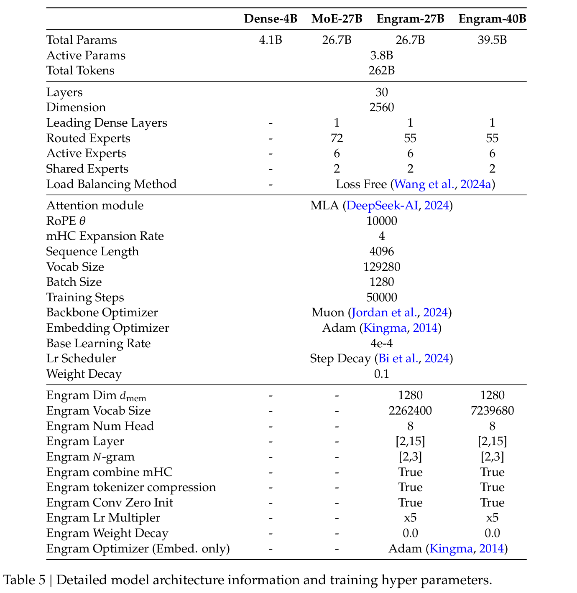
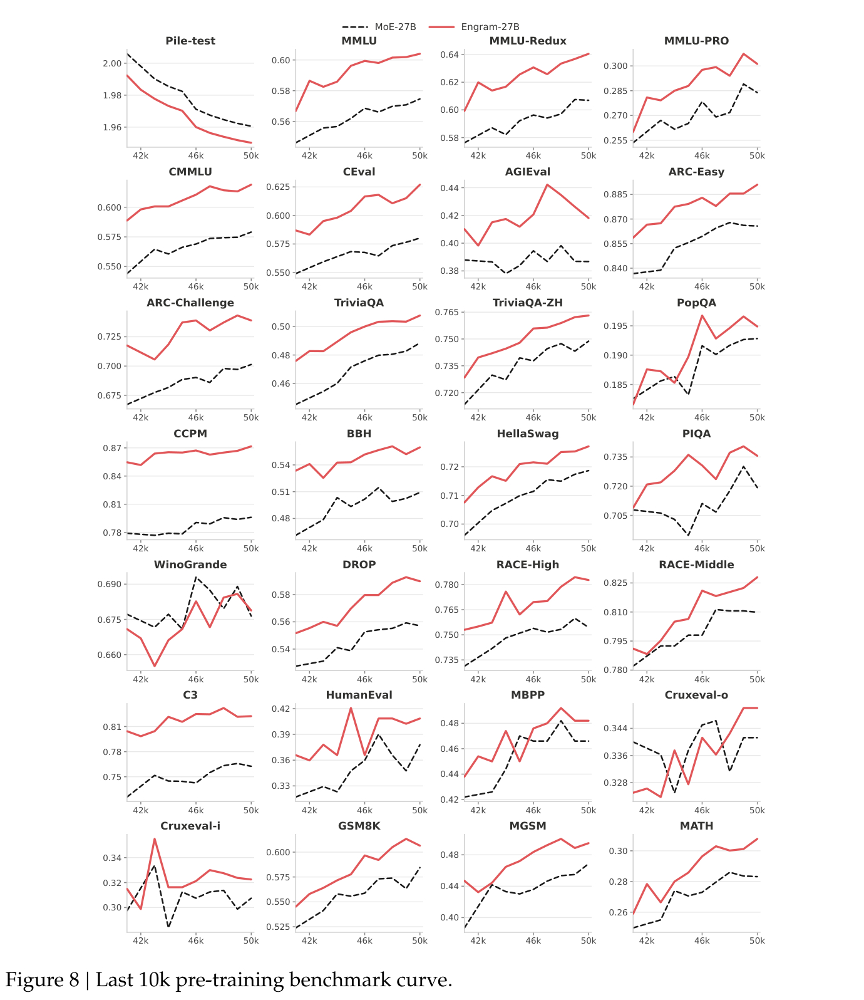
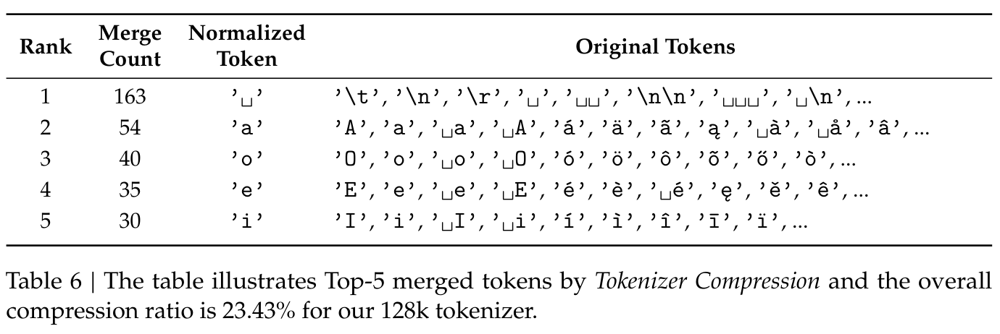